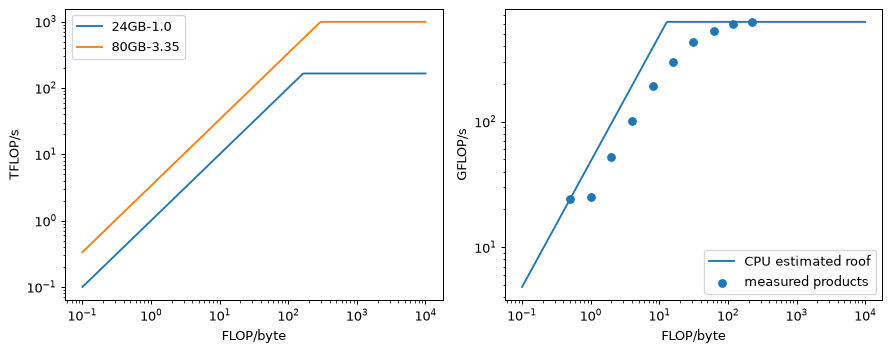
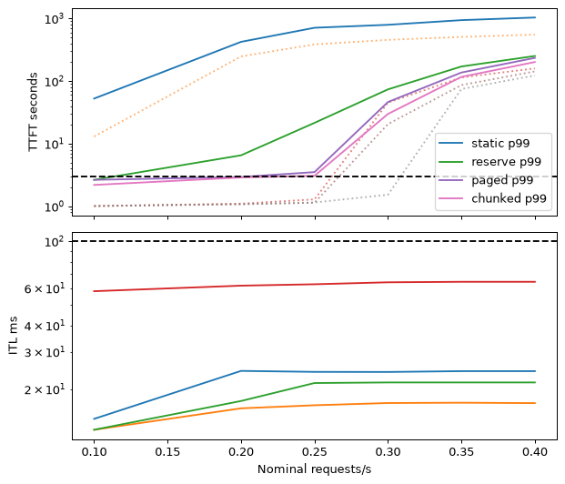
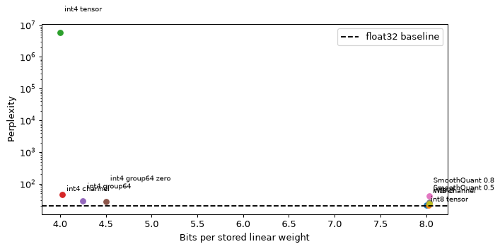
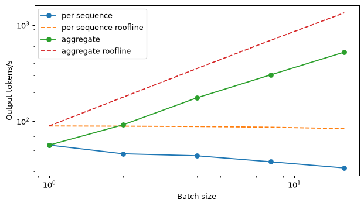

两个阶段：预填充与解码
语言模型通过两种不同的工作负载来回答请求：先处理提示，再逐个生成新 token。两阶段使用相同的权重，却对硬件提出很不相同的要求。判断哪个阶段占主导，是估算时延的第一步。
在预填充（prefill）阶段，模型同时接收提示中的所有位置。因果掩码阻止较早的位置看到后续位置，但这些位置的矩阵乘法仍可并行执行。每个解码器层计算提示的键和值，并将它们写入键值缓存（KV cache）。最后一个提示位置产生 logits，用于选择第一个输出 token。生成时不需要更早位置的 logits，尽管未经优化的实现也可能计算它们。
在解码（decode）阶段，下次前向传播接收刚选出的 token。它的查询读取先前的键和值，它的新键和值也加入缓存。模型选择另一个 token，将其追加，然后重复这一过程。遇到序列结束 token、配置的停止条件或输出 token 上限时，生成结束。模块 7解释了采样规则；这里关注每次前向传播的成本。第二个输出通常无法在第一个输出确定之前计算，因为它以第一个输出为条件。
分别统计运算与流量
模块 6推导了本系列采用的前向运算约定。内存核算包含全部 N 个参数。矩阵运算使用 N_{\mathrm{matmul}}，不包括未绑定的输入嵌入表：查找其中一行，并不等于乘以所有行。该约定将很小的归一化项保留为近似。上下文长度为 t 时，一个 token 约需 2N_{\mathrm{matmul}}+4Ldt FLOPs。一次乘法和一次加法算两个 FLOPs；L 是层数，d 是模型宽度。
对于含 T_p 个 token 的提示，对因果注意力项求和得到
短上下文时，平方项很小，但它比投影项增长更快。这些是运算计数，而不是经过时间。内核可能在被掩码的位置执行运算；融合和分块方式决定实际执行与计数有多接近。该估算适合规划和比较，随后仍需在实际引擎上测量。
这里采用十进制单位：kB 表示 10^3 字节，GB 表示 10^9 字节，TB/s 表示每秒 10^{12} 字节，TFLOP/s 表示每秒 10^{12} FLOPs。模块 3 和 6 有时使用二进制 KiB 和 GiB。当缓存量再次出现时，我们同时给出两种单位，避免将单位变化误认为模型变化。
贯穿案例是假设场景：一个团队调整了模块 7选定的双语 9.5B 模型，用于起草和检查反应堆压力容器泄压系统的安全论证。模块 9 已将 LoRA 适配器合并到 bf16 权重中。本模块评估约 5.5 GB 的量化部署产物，并估算每次 4,000 个输入、2,000 个输出 token、每天约 2,000 次请求的资源需求。第 11 节给出完整核算。
估算两个阶段的时间
设 P_{\mathrm{peak}} 为稠密峰值 FLOP/s，\mathrm{BW} 为峰值内存带宽。模型 FLOPs 利用率（MFU）表示实际模型计算量与峰值的比例。本模块所有 GPU 估算均假设预填充 MFU 为 50%；解码采用峰值带宽，得到乐观下界。这两项都不是测量结果或性能保证。
这里 TTFT 是首 token 时延（time to first token），W 是权重文件的字节数，k 是单个序列每个 token 的缓存字节数。TPOT 是第一个输出之后的每输出 token 时延（time per output token）。客户端 TTFT 还包括分词、传输和采样。该不等式给出流量模型的时间下界：实际内核可能搬运更多字节、达不到峰值带宽，或在其他运算上花费时间。
若生成 n_{\mathrm{out}} 个输出 token，并近似认为解码时间恒定，则
减去一很重要：第一个输出已在预填充阶段得到。对于长答案，这对结果影响不大，但可以避免重复计数第一个 token。由于缓存会增长，使用平均解码上下文，是逐步求和的一种方便近似。
案例模型的 N=9{,}550{,}729{,}216、N_{\mathrm{matmul}}=8{,}927{,}875{,}072，并且 L=36、d=4096。含 2,000 个 token 的提示需要 3.57\times10^{13} 次投影 FLOPs 和 1.18\times10^{12} 次因果注意力 FLOPs，共 3.69\times10^{13}。在 H100 SXM 上按 989 TFLOP/s 的 50% 估算，约需 75 ms；在参考消费级配置上按 165 TFLOP/s 的 50% 估算，约需 0.45 s。
500 个 token 的答案，其平均上下文约为 2,250 个 token。缓存流量每步增加 147{,}456\times2250=0.332 GB，因此 1.0 TB/s 配置的每步时间为 (5.5+0.332)/1000=0.00583 s。端到端估算为 0.45+499\times0.00583\approx3.36 s，解码约占 87%。将提示加倍至 4,000 个 token，会使预填充增至约 0.92 s，而平均上下文的解码步长仅增至约 6.13 ms。
用总参数数目简化为 2N，会得到每 token 1.91\times10^{10} FLOPs，比本系列的投影约定高约 7%。只有明确说明是粗略近似时才这样使用。在提示长度为 32,768 时，注意力约需 3.17\times10^{14} FLOPs，投影约需 5.85\times10^{14}。此时忽略注意力会漏掉相当一部分工作量。
简单字节估算为何有用
在 batch 为一时，大型投影权重通常需要在每一步从设备内存读取，因为它们无法装入片上缓存。输入嵌入是例外，因为只查找一行；输出头仍需为整个词表打分。对于案例的混合精度文件，减去约 0.623 GB 的输入表后，权重流量约为 4.9 GB。如果内核达到 1.0 TB/s 峰值的 85%，仅这部分流量就需约 5.8 ms，而基于整个文件的估算为 5.5 ms。这两项特定修正几乎相互抵消。因此我们保留清晰的 W=5.5 GB 约定，再加入缓存流量。它仍是近似：换一个模型，两项修正未必抵消。
一次请求先经历并行预填充，再经历串行解码步。0.45 s 的预填充和约 5.8 ms 的步长，是所述假设下的边界估算，并非部署时间线的实测值。阶段差异解释了为什么缩短答案可能比减少相同数量的提示 token 节省更多时间。
输入位置共享大型矩阵乘法和一次权重读取；输出位置通常需要连续多次读取。这种机制有助于解释模块 7 讨论的输入、输出价格差异，尽管商业价格还受利用率、竞争和运营成本影响。token 价格不是硬件常数。同样，标称 FLOP/s 很高的模型部署，不一定能快速解码单个请求。下一节给出判断某个运算受哪种资源限制的方法。
两个设备具有相同的内存带宽，但稠密 FLOP/s 差别很大。假设权重都能装入内存，哪个设备能更快地解码一个短上下文序列？
查看答案
一阶近似下，两者的解码都受带宽限制，时间相近。更高的 FLOP/s 有助于预填充和足够大的 batch。不过，不同内核、实际带宽和主机开销仍可能造成实测解码速度差异。
屋顶线模型：计算受限与带宽受限
算术强度衡量每个在片外内存与计算单元之间传输的字节支持多少计算。定义 I=F/M，即 FLOPs 除以搬运的字节数。若设备可执行 P_{\mathrm{peak}} FLOP/s，并提供 \mathrm{BW} 字节/s，则简单的性能上限为
脊点（ridge point） I^* 是带宽直线与计算上限的交点。在它左侧，即使完美利用传入的字节，也无法足够快地供给算术单元；在它右侧，潜在的数据复用已足以使计算成为限制。在对数坐标上，这两个区域形成屋顶的斜线部分和水平部分。Williams、Waterman 和 Patterson 于 2009 年提出屋顶线模型（Roofline 模型）。它的价值在于基于明确的流量假设给出上限，而非充当详细模拟器。
矩阵向量乘法：读取大量权重，执行少量工作
考虑 \mathbf{y}=\mathbf{W}\mathbf{x}，其中 \mathbf{W}\in\mathbb{R}^{m\times n}。每个输出元素（共 m 个）需要 n 次乘法和约 n 次加法，按我们的约定，共 2mn FLOPs。若所有张量每个元素都使用 b 字节，理想的一次读写流量为 b(mn+n+m) 字节。因此
维度很大时，权重矩阵流量远大于向量和输出流量。因此，bf16 权重约为每字节一个 FLOP；若激活和缩放因子流量相对较小，仅权重采用 int8 存储时约为两个，采用 int4 时约为四个。这些混合格式近似讨论的是存储流量，不意味着采用整数乘法。仅权重量化内核可以解包低位权重，再使用浮点格式相乘。
对于 H100 SXM 配置，I^*=989/3.35\approx295 FLOP/字节。当 bf16 矩阵向量乘法的 I\approx1 时，在该模型中最多只能达到约 3.35 TFLOP/s，即 989 TFLOP/s 峰值的 0.34%。这样低的比例，与正常工作的带宽受限内核并不矛盾，本身也不表示服务器需要优化。因此，只报告 GPU 算术利用率，可能引导出错误的优化措施。
矩阵矩阵乘法：复用权重
现在令 \mathbf{X}\in\mathbb{R}^{n\times B} 包含 B 个 token 向量。乘积 \mathbf{Y}=\mathbf{W}\mathbf{X} 执行 2mnB FLOPs，而理想流量为 b(mn+nB+mB)。因此
对于宽度为 d 的方形乘积，
不必对每一列单独读取整个矩阵。好的内核将其分块装入片上存储，并跨列复用。2B/b 的近似描述了最初的增长；精确表达式还计入不断增长的激活流量。算术强度最终会饱和，而不是无限增长。实际分块复用、布局和缓存行为，可能使实测运算表现低于这个理想流量屋顶。
对于 d=4096 和 bf16，有 I(B)=4096B/(4096+2B)。当 B=1,16,64,256,2048 时，算术强度约为 1.0,15.9,62.1,227.6,1024 FLOP/字节。前四项仍低于 H100 配置的 295 脊点，而最后一个达到预填充规模的乘积，在理想模型中具有足够复用，可进入计算受限区域。
采用小 B 近似，bf16 在 B=295 附近到达脊点。在 165 FLOP/字节的消费级配置中，仅权重采用 int4 存储的投影平衡点为 4B=165，即 B\approx41。对于包含更高精度输出头的整个案例文件，仅考虑权重时的平衡点则为 B\approx165\times10^{12}\times5.5\times10^9/(2N_{\mathrm{matmul}}10^{12}) \approx51。这些是投影运算的平衡点，并非部署服务可支持的并发数。
注意力为每个序列读取不同的缓存
投影矩阵的批处理不会共享不同用户的键和值。在一个层、一个解码位置上，注意力约执行 4n_h d_{\mathrm{head}}t FLOPs，并读取 2n_{\mathrm{kv}}d_{\mathrm{head}}tb 字节的缓存键和值。算术强度为
案例中每个 KV 头对应四个查询头，并使用 bf16 缓存，因此算术强度为每字节四个 FLOPs，与 batch 大小无关。注意力计算量和缓存流量都随序列数增长。大 batch 可以摊薄权重流量，却仍因缓存流量而受带宽限制。长上下文时，增加序列带来的总吞吐增益递减，而每个用户的步长会变慢。内存容量往往在到达投影平衡点之前就耗尽。第 5 节会量化这一效应，而不假设线性扩展。
根据 H100 SXM 和参考 24 GB 配置计算的屋顶线。随着 B 增大，bf16 投影标记向右移动；解码注意力的算术强度保持在每字节约四个 FLOPs。图中区分了潜在的算术复用与每个序列仍必须提供的流量。
测量该阶段使用的资源
预填充报告实际模型 FLOP/s 除以匹配的稠密峰值，即 MFU。对于解码，可用估算的内存带宽利用率（MBU），比较每秒搬运的假设字节量与峰值带宽。如果字节数来自估算而非计数，就应标明是估算。不说明模型、上下文、batch 和精度，就无法跨运行比较这些指标。融合内核也可能使单个运算的归因变得困难。
实验 1 用四个线程测量 float32 CPU 矩阵乘法。在记录的运行中，B = 1 对应约 48.24 GB/s 的有效带宽；最大测试乘积达到 621.6 GFLOP/s，估算脊点为 12.88 FLOP/字节。这些数值属于该机器和该测量，不代表所有 CPU。单列乘积可能使用不同于双列乘积的矩阵向量内核。不要因为理论上共享一次权重读取，就推断 B = 2 没有额外成本。
CPU 实验也提醒我们，不应过于机械地解读屋顶线。一个巨型矩阵的局部性可能更好，调度开销可能更低，而解码器包含许多小投影、归一化和注意力运算。实验 6 将矩阵估算下界与真实模型的实测步长并列。两者吻合是有用线索；不吻合应推动性能分析，而不是不断修改公式直到预测碰巧符合。
峰值规格必须采用兼容的精度和累加格式。稀疏张量指标假设支持特定结构化稀疏性；稠密模型不能使用它们。有些消费级张量指标会因累加格式而相差两倍。计算脊点前务必阅读表格脚注。第 4 节采用注明日期的官方规格，并区分已知事实与假设。
为什么批处理能够大幅提高解码总吞吐量，却未必让单个用户更快得到答案？
查看答案
每次迭代为每个序列生成一个 token，并共享权重流量；但仍需读取每个序列的缓存。总输出随序列数增加，而单个序列每次迭代只得到一个 token，且迭代时间可能随 batch 增大。
深入理解 KV cache
因果依赖结构使缓存具有精确性。较早位置的隐藏状态、键和值，只依赖该位置的 token 和之前的 token，不依赖将来生成的 token。计算完成后，追加一个 token 不需要改变它们。新的查询可以读取保存的状态，而不必要求每个层重新计算整个前缀。这里的精确性表示相同的数学函数；浮点归约顺序仍可能改变结果的最后几位。
没有缓存时，一个增长到 T 个位置的序列，需要处理长度为 1,2,\ldots,T 的前缀，共进行 T(T+1)/2 次位置前向计算；有缓存时约为 T。这节省的是投影计算。每一步仍要对增长的前缀执行注意力，因此缓存不会使总生成成本与上下文长度无关。它消除了旧状态的重复计算，却没有消除新查询读取旧状态的需要。
根据配置推导容量
每个 token、每个层、每个 KV 头，都有一个键向量和一个值向量。每个向量含 d_{\mathrm{head}} 个元素。若每元素使用 b 字节，则
单个层的 K、V 张量形状均为 (B,n_{\mathrm{kv}},T,d_{\mathrm{head}})。开头的二表示键和值；层数覆盖全部层。漏掉任意一项，都可能得到看似合理但错误的内存估算。查询头影响注意力计算，但当架构共享键时，不需要为每个查询头分别保存键。
多头注意力的 KV 头数与查询头数相等。分组查询注意力（GQA）让多个查询头共享一组键和值；多查询注意力（MQA）让全部查询头共享一组键和值。它们是架构选择，通常在训练或有意进行的模型转换中确定；不能在部署时随意改变检查点的头配置。模块 6 解释了其注意力计算。这里的实际后果是，缓存按查询头与 KV 头的比例缩小。
模型具有 36 层、八个 KV 头和 128 的头维度。bf16 缓存每 token 使用 2\times36\times8\times128\times2=147{,}456 B，即 144 KiB。一个 6,000-token 序列使用 0.884736 GB；32,000 个 token 使用 4.718592 GB。在 16 GB 缓存预算中可容纳十八个 6,000-token 序列，因为 18\times0.884736=15.925248 GB，而第十九个会超出预算。
若改为 32 个 KV 头，每 token 缓存为 589,824 B，每个 6,000-token 序列为 3.538944 GB，只能装入四个。若只有一个 KV 头，则每 token 为 18,432 B。在八个 KV 头下，将 bf16 值改为单字节值，理想字节数减半至 73,728 B，尚未计入缩放因子元数据。
每个层保存紧凑的 K、V 张量。新位置沿两个张量的 token 轴各追加一个切片。共享的 KV 头在存储中仍保持共享；若永久扩展到查询头数，就会丢掉 GQA 的节省。
参数量不能单独决定缓存大小
嵌入词表可以增加许多参数，却不增加任何键或值状态。反过来，层数或 KV 头更多的模型，其缓存可能远大于另一个参数规模名称相近的模型。应读取实际配置；若模型采用宽度除以查询头数的约定，就据此推导头维度。有些架构独立指定头维度，或使用不同的缓存表示。
对于常见的已发布解码器配置，bf16 计数为：
| 配置 | 层数 / KV 头数 / 头维度 | 每 token 字节数 | 4,096 个 token 的缓存 |
|---|---|---|---|
| Llama-2-7B，多头 | 32 / 32 / 128 | 524,288 B，512 KiB | 2.147 GB |
| Llama-3.1-8B，GQA | 32 / 8 / 128 | 131,072 B，128 KiB | 0.537 GB |
| Mistral-7B-v0.1，GQA | 32 / 8 / 128 | 131,072 B，128 KiB | 0.537 GB |
| Qwen2.5-7B，GQA | 28 / 4 / 128 | 57,344 B，56 KiB | 0.235 GB |
这些是根据指定版本配置计算的完整上下文张量大小，不是进程分配的实测值。滑动窗口实现可能保留更少的位置。配置链接见参考资料。练习 3 要求对三个较小模型应用同样的计算，而不假设参数量最小的模型也拥有最小缓存。
容量与流量相关，但不同
大约在 5.5\times10^9/147{,}456\approx37{,}300 个位置时，单个案例序列的缓存与舍入后的权重文件一样大。十八个序列、平均上下文为 5,000 个 token 时，每步缓存读取约为 13.27 GB，已达权重文件的 2.4 倍。设备可能轻松装下这些缓存，却需要更长时间在每次解码迭代中读取它们。空闲内存决定请求能否运行；带宽帮助决定请求推进多快。
保守的 24 GB 预算，其中权重 5.5 GB，假设的运行时预留 2.5 GB。GQA 可容纳十八个完整长度请求，多头存储可容纳四个。未用余量和运行时内存仍计入容量。
其他缓存设计会改变核算。滑动窗口注意力只保留有界的近期上下文；Mistral 7B 原始架构采用 4,096-token 窗口。DeepSeek-V2 的多头潜在注意力缓存压缩的潜在表示，而非完整键和值。这些机制取决于模型和内核，不能任意替换该公式。8 位缓存减少值存储，但需要缩放因子元数据和质量评估。将缓存卸载到主机内存可以增加容量，却要通过慢得多的链路传输；容量解决方案可能变成时延问题。
正确的位置与分配策略
通过拼接增长的缓存，会分配新张量并复制旧张量。它适合实验 2 的简单实现，但每一步都增加工作。生产系统通常预先分配存储，或从池中取得固定大小的块。第 6 节讨论分页。必须区分逻辑位置、物理块地址和张量长度，特别是在左侧填充和共享前缀时。
RoPE 使用 token 的语义位置旋转查询和键。对于单个无填充请求，下一个 token 的位置就是之前的位置数。左侧填充的 batch 中，张量列包含填充，但填充不推进该行的语义位置。复用前缀后，位置必须从复用前缀之后继续，不能从零重新开始。这些错误不一定抛出异常：形状可能正确，函数却已经错误。
实验 2 同时比较 logits 和 token。正确缓存与完整重算生成了相同的 256 个 token，最大 logit 误差为 1.79\times10^{-6}。271 个位置的实测缓存恰为 555,008 字节。旋转位置偏移一位时，贪心 token 仍相同，但 logits 已变化；冻结位置时，到第 9 个输出位置就出现了不同 token。一旦 token 分歧，后续 logit 差异还包含条件文本的不同。好的回归测试应先在共同前缀上比较缓存与非缓存 logits，再评估生成字符串。
为什么因果缓存保留模型函数，而只检查贪心 token 相等不足以验证实现？
查看答案
在因果掩码下，较早状态不依赖未来 token，因此复用它们与重算在数学上等价。但错误 logits 仍可能保留相同的最大分量，所以 token 相等可能隐藏错误，直到接近并列的概率或另一个提示暴露问题。
硬件：规格表上的三个数字
容量、带宽和稠密计算能力，回答三个不同的资源规划问题。容量决定权重、运行时缓冲区和所需缓存能否装入；带宽限制流量较重的解码；计算能力限制预填充和权重复用较多的乘积。跨设备时，互连带宽与时延成为第四项关注点。某个维度的高指标无法弥补另一个维度的硬限制：模型装不下，就无法使用高速算术单元。
下表采用已有硬件示例，官方规格核查日期为 2026 年 10 月 5 日。它不是最新产品目录，也不是部署引擎排名。稠密张量速率不包含结构化稀疏性增益。为保持计算一致，参考消费级配置将 1.008 TB/s 舍入为 1.0，将 165.2 TFLOP/s 舍入为 165。最后一列是单个 5,000-token 上下文、每步读取 6.23728 GB 时，仅由带宽导出的乐观解码上界。
| 设备 / 配置 | 标称容量 | 带宽 TB/s | 稠密低精度 TFLOP/s | 脊点 FLOP/字节 | 解码上界 token/s |
|---|---|---|---|---|---|
| H100 SXM | 80 GB | 3.35 | 989 | 295 | 537 |
| A100 80 GB SXM | 80 GB | 2.039 | 312 | 153 | 327 |
| L40S | 48 GB | 0.864 | 362 | 419 | 139 |
| L4 | 24 GB | 0.300 | 121 | 403 | 48 |
| RTX 4090 参考配置 | 24 GB | 1.0，舍入值 | 165，fp32 累加 | 165 | 160 |
| M2 Ultra | 最高 192 GB 统一内存 | 0.800 | 此处不作假设 | — | 128 |
| 双通道 DDR5-5600 示例 | 取决于系统 | 0.0896，理论值 | 取决于系统 | — | 14 |
NVIDIA 的来源包括 H100 规格、A100 规格表、L40S 规格、L4 规格和 Ada 架构白皮书附录 A。Apple 的 M2 Ultra 发布公告提供容量与带宽。DDR5 示例是计算结果：2\times8\times5.6\times10^9=89.6\times10^9 字节/s。它假设两个 64 位通道都已安装内存，给出传输上限，而非应用实际达到的带宽。
做除法前，先读脚注
NVIDIA 的 L4 表格列出稀疏性条件下的 242 TFLOP/s，并明确说明无稀疏性时减半。这里采用的稠密值为 121。RTX 4090 白皮书区分 fp32 累加时的 165.2 TFLOP/s 与 fp16 累加时的 330.3，均尚未计入稀疏性。累加精度既影响相关上限，也影响数值行为。将最大的宣传数字用于稠密 fp32 累加计算，会无依据地将预测计算性能翻倍。
内存标注也需要解释。有些 GPU 标称容量对应二进制 GiB：24 GiB 约为 25.77 十进制 GB。不能假设每个设备或分区都提供这个确切容量。应查询运行时报告的实际字节数，并在加载引擎后测量空闲内存。对于实际提供 24 GiB 的设备，我们采用的 24 十进制 GB 预算有意偏保守，而 2.5 GB 的运行时预留是另一项独立假设。ECC 预留、图缓冲区和其他进程可能消耗部分差额。
初步估算时，可以把峰值带宽的 70–90% 和稠密计算峰值的 40–60% 作为规划假设，再用实测值替换。即使规格较弱，专门适配设备的内核，也可能胜过另一设备上匹配不良的内核。持续供电与散热、内存错误、格式支持和可用软件，与三个算术指标同样重要。
在我们的假设下，两个 24 GB 配置都留下 16 GB 缓存预算，因此都能接纳十八个案例请求。读取 6.23728 GB，在 1.0 TB/s 下约需 6.24 ms，在 0.30 TB/s 下约需 20.79 ms：约为 160 与 48 token/s，相差 3.3 倍。容量相同不代表速度相同。
对于 4,000-token 提示的 7.61\times10^{13} FLOPs，采用对应计算峰值的 50%，得到 H100 约 0.15 s、A100 约 0.49 s、L40S 约 0.42 s、参考消费级配置约 0.92 s、L4 约 1.26 s。这些是模型估算的预填充时间，均不含排队或 API 往返。
七个示例的单序列带宽上界。容量相同的显卡，解码上限可能不同。M2 Ultra 和 DDR5 的条形只使用带宽，因为未为它们假设可比较的张量计算上限。
选择部署方案，而不仅是芯片
数据中心产品通常提供 ECC、服务器散热、受支持的多设备互连和运维支持。消费级产品适合某些本地实验，但需要考虑散热、物理安装和适用的软件条款。NVIDIA 的 GeForce 软件许可包含数据中心部署限制，并列有例外；应检查目标安装场景的适用条款，不能把物理上装得下当作部署许可。这是选型约束，不是时延公式。
张量并行将层内工作和权重分到多个设备。理想情况下，容量、带宽和计算能力相加，但层堆栈中会反复通信。由慢速主机链路连接的两张卡，不一定将解码时延减半。流水线并行增加容量，并可在多个请求同时执行时提高吞吐量；单个请求仍需经过全部阶段。模块 8 解释了其机制。部署估算必须包含实际拓扑。
CPU 或统一内存系统，可以装下超出小型独立 GPU 容量的模型。代价往往在预填充。在示例 DDR5 系统上，按峰值带宽计算，缓存和权重流量最多支持约 14 token/s。若持续计算能力仅假设为 0.5 TFLOP/s，案例的 4,000-token 预填充将需约 152 s。这是场景计算，不是对所有笔记本的断言。llama.cpp 等高效利用带宽的引擎，使这类部署对某些负载仍有价值，特别是不要求长提示交互时延的场景。
只要知道容量、受支持的稠密算术和实际带宽，同样的推理也适用于 AMD Instinct、Google TPU、Intel Gaudi 等加速器。还需在对应后端检查模型支持、格式支持和部署软件栈。不存在与硬件无关、能将参数量转换成可靠 token/s 指标的方法。
为什么增加算术更快的 GPU，可能几乎不改变单用户解码速度，却显著改善长提示预填充？
查看答案
单用户解码可能仍受权重和缓存流量限制。长提示乘积在多个位置复用权重，从而进入计算受限区域。收益取决于该阶段的瓶颈，而非一个总的设备速度数字。
批处理：静态、动态与连续
单个请求在解码时，可能让 GPU 的大部分算术能力闲置。将多个请求放入一次迭代，可使投影矩阵在这些 token 向量之间复用权重。服务器每次迭代于是输出多个 token，每个解码序列一个。这提高了总输出，但也引入调度选择，决定每位用户等待多久。
静态批处理（static batching）让固定的一组请求同时开始。输入填充到兼容形状，batch 一直执行，直到最长输出完成。它带来三种成本：填充输入的工作、较短输出完成后的闲置槽位，以及新到请求等待整个 batch 结束。使用相同输入和输出长度的基准测试，可以隐藏这三项。该基准上高效的 batch，在真实起草服务的可变长度下可能很浪费。
动态请求级批处理（dynamic request-level batching）等待目标 batch 大小，或等待一个短调度超时。超时可防止低负载服务无限等待满 batch。它用可控的等待换取更多复用，但通常仍将整个 batch 保持到最长输出完成。因此，称服务器为“动态”，并不能证明它可以在每个 token 步补充已完成的槽位。
连续批处理（continuous batching），也称迭代级批处理，在每次前向传播后重新调度。完成的请求离开，符合条件的等待请求加入。线性投影可以一起处理所有选中的 token 向量，而注意力使用每个请求自己的上下文。Orca 的选择性批处理明确了这一差异。调度器必须同时处理新提示与持续解码，而不只是按请求边界组装 batch。
四个请求分别需要 100、200、400 和 800 个输出步。若每步固定为 20 ms，静态 batch 的四个槽位会被占用 800 步，即 16 s。在 3,200 个可用槽位步中，它生成 1,500 个 token：有效利用率为 46.9%，约 94 token/s。如果一直有请求排队，并立即补充完成的槽位，就可接近每 20 ms 四个 token，即 200 token/s。在这个简化示例中，2.1 倍提升来自消除闲置槽位，并非矩阵乘法快了两倍。实际步长会随上下文和 batch 形状变化。
静态槽位保持预留，直到最长请求结束。连续槽位可在一个请求完成后立即开始另一个。固定步长时间线单独展示闲置槽位浪费，有意省略预填充干扰与缓存增长；完整服务器必须考虑这两者。
缓存流量限制批处理收益
对于平均上下文为 \bar t 的 B 个序列，理想的带宽受限步长为
权重得到摊薄，但每个缓存仍贡献字节。总吞吐曲线具有递减收益；B 增大时，它趋近 \mathrm{BW}/(k\bar t)，而非无限增长。只要步长增加，每序列速度就下降。计算也通过 (2N_{\mathrm{matmul}}B+4LdB\bar t)/P_{\mathrm{peak}} 给出上限。当同时考虑两项约束时，应采用较大的时间。容量仍是独立的接纳限制。
平均上下文为 5,000 个 token 时，单个缓存为 0.73728 GB。权重为 W=5.5 GB、带宽为 1.0 TB/s 时，batch 为 1、4、8、18 的步长约为 6.24、8.45、11.40、18.77 ms。每个序列约获得 160、118、88、53 token/s；总输出约为 160、473、702、959 token/s。十八个序列的总输出约为单序列的六倍，而非十八倍。
当 B=18 时，投影与注意力工作量约为 3.75\times10^{11} FLOPs，在参考稠密峰值下约需 2.3 ms。即使为效率预留将计算时间加倍，也仍低于流量估算。缓存读取使满 batch 继续受带宽限制。
平均上下文为 5,000 个 token 时计算的每序列与总解码曲线。内存限制线采用完整的 6,000-token 预留，因此可行 batch 到 18 为止，尽管曲线继续延伸。仅考虑权重的比较忽略缓存读取，因此夸大收益。
新加入的提示可能让所有人暂停
按参考假设，新 4,000-token 提示的预填充约需 0.92 s。如果该预填充与持续解码占用同一次迭代，正在接收流式输出的用户会看到长间隔。他们的平均输出速度可能仍可接受，但体验已明显中断。因此，仅平均 TPOT 不足够；逐个 token 的间隔可以暴露干扰。
分块预填充（chunked prefill）限制一次迭代中新提示的位置数。一个提示块与解码位置共享前向传播，因此简化成本是总流量时间与总计算时间的最大值。把完整预填充时间加到独立解码时间上，会丢弃复用，实际模拟的是另一种调度。小块限制停顿，却需要更多迭代；过小的块可能增加开销，并延迟提示的首 token。
当十七个持续序列的上下文为 5,000 时，实验 3 模型中的 512-token 初始块约需 116 ms；缓存已有 2,000 个提示位置后，约需 123 ms。128-token 块对应约 32 和 34 ms。后续块需要更多注意力工作，因为其查询看到更长的前缀。不存在对所有设备、上下文分布和服务等级目标都最优的统一块大小。Sarathi-Serve 研究这一吞吐量与时延的权衡。DistServe 和 Splitwise 将预填充与解码分到不同设备，可以消除部分干扰，却引入缓存传输和资源分配问题。
接纳策略也是调度策略的一部分
调度器通常限制运行序列数、每次迭代的新 token 数和缓存占用。这些限制相互影响。当缓存预算只能装下少数长请求时，宽松的序列上限没有作用。较大的预填充 token 预算可能提高吞吐量，却损害 token 间隔尾部。按需接纳可以比完整长度预留装下更多当前上下文，但后续增长可能迫使抢占。持续过载会把这种灵活性变成反复浪费的预填充。
实验 3 用固定随机种子的 300 次到达比较这些策略。提示长度为 2,000–6,000 个 token，输出采用截断的对数正态分布，平均约 1,737 个 token。在名义 0.10 请求/s 时，静态策略的中位 TTFT 约为 13 s，分块连续调度约为 1.01 s。高负载下，静态输出稳定在约 300 token/s，连续输出约为 590。这些是所述规则下的模拟结果。静态策略未检查内存，因而即使真实设备会拒绝该 batch，模拟也偏向静态批处理。
模拟器的名义 0.20 请求/s，在有限到达样本中实际约为 0.224。短负载测试的实际到达率，不自动等于分布参数。不同策略采用相同长度，使比较可以隔离调度影响，而不是负载变化。
为什么服务器的总 token/s 很好，流式输出体验却仍可能很差？
查看答案
批处理可以提高总吞吐量，同时使单个解码步变慢。整段提示预填充也可能引入偶发长间隔。应同时测量每请求时延、token 间隔尾部和总吞吐量。
分页注意力与前缀缓存
请求到达时，输出长度尚未知。如果服务器为最大可能长度分配一段连续缓存，就无需扩展分配，但会预留许多可能永远不存放 token 的位置。不同分配大小可能在内存池中留下空隙；即使较小的分配，也可能有未使用的尾部。这些是分配器和预留的成本，不是模型参数或不可避免的注意力状态。
PagedAttention 论文测得，所研究系统中只有 20.4–38.2% 的 KV cache 内存存放实际 token 状态。提出的块分配与注意力内核，在相近时延下使吞吐量比评估的基线提高 2–4 倍。这些结果对应论文的工作负载与系统，不能保证相对任何现代引擎都有相同收益。
将逻辑位置映射到物理块
将缓存存储划分为固定大小的块。序列的块表（block table）将逻辑块编号映射到共享池中的物理块。请求增长时获得另一个块，而非预留全部未来可能的位置。注意力内核按表读取所需键和值。同一序列的块不必在设备内存中相邻。这类似虚拟内存分页，但大小与内核要求按注意力需求选择，而非操作系统 CPU 页的需求。
若每块为 16 个 token，每序列最多浪费 15 个尾部位置。更小的块可减少尾部，却会增加表长度，并将内核读取拆成更多片段。块大小是后端或配置选择；16 是这里和原论文采用的示例，不是当前所有 vLLM 的统一默认值。分页不减少真实 token 状态所需的字节，而是减少分配浪费，并允许有用的共享。
案例模型预留 8,192 个 token 需要 8192\times147{,}456\approx1.208 GB，16 GB 可容纳十三个这样的预留。若请求当前只有 1,500 个位置，只有 18.3% 的预留有实际用途。
采用 16-token 块时，恰好 1,500 个位置占 \lceil1500/16\rceil=94 块，即 1,504 个槽位。这约为 0.222 GB，理想池可容纳 72 个当前上下文。但这并不表示可以永远支持 72 个任意增长的请求。调度器必须为增长留余量，或之后进行抢占。37-token 请求占三块，留下 11 个闲置槽位；最坏的 15 槽位尾部，对此模型约为 2.21 MB。
只共享身份相同的状态
同一提示的多个续写，可引用相同的完整前缀块。引用计数记录多少序列使用每个块。如果序列需要写入尚未填满的共享块，写时复制（copy-on-write）会为它创建私有副本，使另一个序列的状态保持不变。完整前缀块可继续共享。简单地给两个请求同一个可变缓存对象，不是写时复制；后续追加可能破坏彼此独立性。实验 2 使用显式深拷贝，使分支语义清楚可见。
两个逻辑块表共享完整前缀块，再指向私有续写块。引用计数和空闲池决定分配。当一个续写修改部分填满的共享块时，写时复制保护该块。
池满时，引擎可能将缓存交换到主机存储，或丢弃状态，在重新接纳时重算。哪种更便宜，取决于传输速度、上下文长度和模型。两者都会增加时延。持续过载时，反复抢占可能消耗工作，却完成不了多少请求。应将抢占率与队列深度一起监控；不能仅因分配器从不抛出内存不足异常，就认为容量规划充分。
在独立请求之间复用稳定前缀
前缀缓存（prefix caching）识别可复用的 token 前缀。基于哈希的设计，同时包含块的 token 和先前前缀的身份；两个其余部分不同的提示，即使后部 token 相同，也不会得到相同隐藏状态。缓存身份还必须区分适配器和其他影响计算的输入。vLLM 的前缀缓存设计记录了块哈希和缓存隔离。SGLang 的 RadixAttention 用基数树组织 token 前缀共享。
缓存命中避免再次计算前缀，也可共享其保存状态。但新查询仍读取前缀。因此，前缀缓存减少预填充工作，不消除解码注意力，也不缩短有效上下文。共享物理存储，也不必然意味着注意力内核每个 batch 只读取共享块一次。估算性能时，要区分存储共享与流量复用。
每个请求具有 3,000 个稳定 token、1,000 个可变 token，以及最多 2,000 个输出 token。冷启动的 4,000-token 预填充约需 7.61\times10^{13} FLOPs。在缓存的 3,000 个位置之后，只计算 1,000 个新位置，约需 2N_{\mathrm{matmul}}1000+4Ld(1000\times3000+1000^2/2) \approx1.99\times10^{13} FLOPs。参考时间为冷启动 0.92 s、热缓存 0.24 s：工作量约减少 3.8 倍，而非恰好四倍，因为仍有前缀注意力。
理想的共享前缀存储只占用一次 0.442368 GB。每个完整请求随后有 3,000 个私有位置，也为 0.442368 GB。因此可容纳 \lfloor(16-0.442368)/0.442368\rfloor=35 个请求，而非十八个。16-token 块引擎只将 3,000 个位置中的 2,992 个作为完整块复用；实现相关预算应包含小量边界开销。
开头的时间戳会改变第一个块，以及所有后续块的身份。用户名、重排的工具定义或不同对话模板渲染也会产生这种影响。应将稳定的系统指令、模式定义和公共文档放在前面，可变请求内容放在后面。共享要求 token id 相同，而不只是文本看起来相近。单独对前缀与后缀分词可能改变边界合并，因此实验 2 在明确相同的拼接 id 上比较两条路径。
实验 2 实测热缓存前向时间为 0.063–0.076 s，冷启动为 2.413–2.511 s，此前先执行一次初始前缀前向传播。最后位置的 logits 最大差异为 3.34\times10^{-5}。一次性成本、缓存复制和之后的淘汰，都影响端到端节省。模块 7从客户端角度讨论提示缓存成本；这里关注复用的计算。任何托管服务的前缀缓存价格，仍取决于提供商。
命中一个 3,000-token 前缀缓存，会将这些 token 从新查询的注意力上下文中删除吗？
查看答案
不会。它们的状态得到复用，但新位置仍读取它们。前缀投影计算被避免，而依赖上下文的注意力和状态存储需求仍存在。
数值格式与量化计算
减少权重存储位数，可降低带宽受限的解码流量，并为缓存留下更多内存。但若内核反量化后仍使用相同算术格式，计算受限的预填充未必加快。模块 8介绍训练中的格式。部署服务区分存储格式、操作数格式和累加格式，因为同一个内核中，三者可以不同。
范围与分辨率回答不同问题
浮点数具有符号、指数和尾数字段。指数位控制范围，尾数位控制给定数量级附近的分辨率。下表的机器 epsilon 是指定格式中一上方的间距，不是对全部实数统一适用的绝对误差界。
| 格式 | 符号 / 指数 / 尾数位数 | 最大有限值 | 一附近的 epsilon |
|---|---|---|---|
| fp32 | 1 / 8 / 23 | 约 3.4\times10^{38} | 2^{-23} |
| fp16 | 1 / 5 / 10 | 65,504 | 2^{-10} |
| bf16 | 1 / 8 / 7 | 约 3.4\times10^{38} | 2^{-7} |
| fp8 E4M3，仅有限值约定 | 1 / 4 / 3 | 448 | 2^{-3} |
| fp8 E5M2 | 1 / 5 / 2 | 57,344 | 2^{-2} |
| 有符号 int8 | 8 个整数位 | -128 至 127 | 缩放后的固定网格 |
| 有符号 int4 | 4 个整数位 | -8 至 7 | 缩放后的固定网格 |
用 bf16 训练的模型，可能产生超出 fp16 范围的激活。此时转换为 fp16 会溢出，尽管 fp16 在一附近的精度更高。反过来，bf16 范围大，也不代表有 fp32 的分辨率。FP8 编码需要精确约定；E4M3 变体对无穷和 NaN 的处理不同。表中采用 Micikevicius 等人描述的仅有限值、最大 448 的约定。
位分配区分范围与精度。整数格式需要缩放因子，将编码解释为实值权重；其有符号范围不是浮点指数范围。
块缩放格式加入共享指数或缩放因子。OCP 微缩放规格定义的 MX 格式，每 32 个元素采用一个八位缩放因子。MXFP4 使用 E2M1 元素，因此在其他元数据之前，每值占 4+8/32=4.25 位。内存估算应包含该开销。硬件支持取决于格式与内核；文件包含四位数值，不表示所选设备支持原生四位算术。
对称最近舍入
对于 b_w 个有符号位，令 q_{\max}=2^{b_w-1}-1。对称绝对最大值量化采用编码 -q_{\max},\ldots,q_{\max}，不使用额外的负整数编码。设
若数值未被裁剪，并且缩放因子表示精确，最近舍入给出 |w_j-\hat w_j|\le s/2。简单噪声模型假设误差在 [-s/2,s/2] 上均匀分布，均值为零，方差为
均匀假设是近似，不是关于训练权重的定理。误差可能相关，裁剪会引入偏差，低精度缩放因子也产生自身误差。但该计算解释了为什么一个较大的离群值通过增大 s，就能显著提高典型平方误差。
对于 \mathbf w=(0.12,-0.48,0.03,0.91,-0.07,0.25,-0.33,0.05)，绝对最大值 int4 给出 s=0.91/7=0.13 和 \mathbf q=(1,-4,0,7,-1,2,-3,0)。重建值为 (0.13,-0.52,0,0.91,-0.13,0.26,-0.39,0)。RMS 误差约为 0.039，低于最大误差界 0.065。
将 0.91 替换为 9.1。缩放因子变为 1.3，其余七个普通数值均舍入为零，RMS 误差变为约 0.246。分组缩放将这种粗化限制在离群值所在组，而非扩散到整个张量。更细的分组，仍不能保护离群值同组的邻近数值。
为偏斜范围平移网格
最小最大值零点方案采用无符号编码：
偏移使范围偏斜的组，比对称网格更均匀地使用量化级别。零点表示和裁剪约定因内核而异。将零点舍入可能移动重建端点，因此不应声称每个值都精确覆盖最小、最大值，或满足对称的未裁剪误差界。常数组需要特殊处理，或一个很小的最小缩放因子，以避免除零。实验 4 为模拟采用了注明的浮点零点表示，并不定义一个所有内核都支持的检查点格式。
对于前面的八个权重，最小最大值缩放因子为 1.39/15\approx0.0927，z=5。编码为 (6,0,5,15,4,8,1,6)，RMS 误差约为 0.030。由于最负权重只有 -0.48，对称网格留下未用的负级别。这种特定偏斜受益于偏移。另一个张量可能有不同权衡；应同时比较实测输出误差与存储量。
粒度带来元数据成本
逐张量方案采用一个缩放因子。逐输出通道方案为每个输出行采用独立缩放因子。分组量化将输入维度划分成小组，常见为 32、64 或 128 个值。离群值于是只拉粗较少邻居的网格。更小的组，每个权重要承担更多元数据：
int4 加 fp16 缩放因子，组大小为 128、64、32 时，每权重占 4.125、4.25、4.5 位。增加一个 fp16 零点，会使组大小 128 的存储增至 4.25 位。为一行 4,096 个权重使用一个缩放因子，每权重仅增加 16/4096 位。文件头、对齐以及例外的高精度张量还需另外计入。将这些方案统称“四位”，会隐藏有意义的内存差异。
计算生成的高斯主体加一个离群值，展示逐张量 int4 的粗网格。不含离群值的组具有更细网格。该分布是合成数据；图示展示机制，而非声称某个模型具有这样的直方图。
对于行缩放因子，y_i=s_i\sum_jq_{ij}x_j 允许最后只应用一次缩放。组缩放因子则需在点积内加权各部分和。实用的仅权重量化内核，可以在寄存器中解包并反量化，不将完整浮点权重矩阵写回设备内存。实验 4 提前反量化，并使用 float32 内核，因此展示质量损伤，却不节省运行内存，也不提供低位加速。最近舍入（round-to-nearest，RTN）是基线；校准方法用数据改善缩放因子或编码选择。
为什么标称 int4 文件，有时每参数显著超过半个字节？
查看答案
组需要缩放因子，有时还需要零点。嵌入、输出头或敏感层可能保持更高精度。文件头和打包对齐增加额外字节。应统计实际张量格式，而不是把全部参数都乘以四位。
大语言模型量化：离群值、GPTQ、AWQ、SmoothQuant 与缓存
平均权重误差小，不等于模型输出误差小。权重作用于激活；在经常具有大激活的通道上，同样大小的误差，比安静通道更重要。自回归条件还可能将一次预测改变放大为后续不同文本。因此，量化方法不仅在舍入哪些张量上不同，也在如何利用校准数据保护重要方向上不同。
从可复现基线开始
实验 4 量化 SmolLM2-135M 的 210 个线性层，将绑定的嵌入与输出矩阵，以及归一化保持为 float32。评估使用八个 512-token WikiText-2 窗口，每个窗口为 511 个下一 token 预测打分。实际记录的运行得到以下困惑度；这是一个短评估协议，不是通用排行榜。
| 模拟权重方案 | 困惑度 |
|---|---|
| float32 参考 | 20.8462 |
| int8 逐张量 | 21.6252 |
| int8 逐输出通道 | 20.9937 |
| int4 逐张量 | 约 583 万 |
| int4 逐输出通道 | 46.2519 |
| int4 分组 64，对称 | 29.1763 |
| int4 分组 64，零点 | 27.1402 |
输出代码围栏给出末尾数字的确切记录。逐张量 int4 在此产生灾难性影响；更细粒度恢复了大部分损伤。分组 64 的对称 RTN，仍使困惑度提高约 40%。不能用这个 135M 模型和简单量化器推断校准后 7B 模型的表现。反过来，大模型论文的良好结果，也不能成为不测量小模型或部署任务的理由。
实验 4 实测困惑度，采用对数尺度。逐张量 int4 的严重失败与较小的 W8A8 损伤都可见。仅权重量化与激活量化是独立实验，不是可以互换的存储与质量权衡点。
激活范围可能比权重范围更难处理
在不重叠的校准窗口上，实验 4 最差的激活通道比值位于第 11 层下投影：最大幅值约 2,479，通道最大值的中位数约 1.307，比值接近 1,897。可比较的最差权重比值小得多。即使八位，一个逐张量激活缩放因子也会使普通通道几乎没有分辨率。
LLM.int8() 研究大幅值隐藏特征，采用混合精度分解：离群维度使用浮点计算，其余维度采用带适当缩放因子的 int8。这可以保留准确性，却增加内核复杂性和开销。离群值取决于层、输入分布和模型；小校准集上观察到的最大值，不是所有未来请求的保证上界。
W4A16 等仅权重量化格式主要减少权重流量。W8A8 等权重与激活量化格式，还能在硬件与内核支持时使用低精度算术。后者有助于计算受限的预填充和大 batch，但必须控制激活误差。实验 4 将动态逐张量 int8 激活与逐通道 int8 权重结合，困惑度为 40.8337，远差于仅权重 int8。其中乘法仍以 float32 执行：这是损伤模拟，不是硬件 W8A8 性能测试。
舍入前转移范围：SmoothQuant
采用行向量记法 \mathbf Y=\mathbf X\mathbf W，激活通道位于 \mathbf X 的列，对应 \mathbf W 的输入行。对于正通道缩放因子 \mathbf s，
量化前，这是精确恒等式。它在不改变乘积的前提下，用权重范围换取较小激活范围。SmoothQuant 根据校准最大值选择通道缩放因子，例如
当 \alpha=0.5 时，将最大值写为 A 和 C，得到 s=\sqrt{A/C}，所以 A/s=Cs=\sqrt{AC}。最大值相等不保证量化误差相等，但解释了平衡机制。除以缩放因子的操作，通常可折叠进前面的运算；折叠必须保留所有使用者和残差路径。对于非线性门控乘积之后的下投影，转换需要比修改前一归一化向量更谨慎。实验 4 显式对输入做除法，使代数可检查。
激活最大值为 40、权重最大值为 0.5 时，\alpha=0.5 给出 s=\sqrt{80}\approx8.94。两项变换后的最大值均约为 4.47。当 \alpha=0.75 时，s\approx18.91，激活约为 2.11，权重约为 9.46。更多范围转移到静态权重，而权重可以使用更细粒度。应在校准数据上选择最佳权衡，并在留出数据上检查，而不能假设均衡总是最优。
SmoothQuant 重新分配通道范围，同时保留未舍入乘积。缩放可以用更大的权重范围换取更容易舍入的激活；随后舍入的乘积仍是近似。
记录的 W8A8 实验，在 \alpha=0.5 时将困惑度从 40.8337 改善为 26.2966，在 \alpha=0.8 时为 23.6349。该结果支持机制在这组校准与评估样本上的作用，并不确定一个通用 alpha。
选择相互补偿的权重误差：GPTQ
采用列向量记法，一层的校准目标为 \|\mathbf W\mathbf X-\hat{\mathbf W}\mathbf X\|_F^2。每个输出行可以分别处理，使用相同的输入协方差。令该行局部二次模型的 \mathbf H=2\mathbf X\mathbf X^\mathsf T。一个坐标舍入后，未舍入坐标可以补偿它对校准输出的影响。相关输入使这种补偿，比独立最小化权重误差更有用。
对于正定的当前 Hessian \mathbf H_F，最小化 \tfrac12\boldsymbol\delta^\mathsf T\mathbf H_F\boldsymbol\delta，约束为 \delta_q=Q(w_q)-w_q=-e_q。拉格朗日乘子给出 \mathbf H_F\boldsymbol\delta+\lambda\mathbf u_q=0，其中 \mathbf u_q 选择坐标 q。应用约束得到
冻结已量化坐标，并继续处理其余活动坐标。Hessian 逆矩阵的一列决定调整方向；它是指定局部二次约束下的最优解，不是模型困惑度的全局最优解。奇异或病态的校准协方差需要阻尼。GPTQ 通过共享列顺序、分块更新和基于 Cholesky 的实现，使该过程可实用。原论文报告，用少量校准文本将很大模型压缩到四位，175B 模型约需四个 GPU 小时。这项历史实验，不是所有量化实现或硬件代际的运行时间估算。
保护重要通道：AWQ
AWQ 用激活统计识别重要权重通道。单个贡献即可展示其缩放思路：舍入前将权重通道乘以 s>1，并将输入激活除以 s。若该组的量化步长近似保持为 \Delta，有效权重舍入误差就从约 \Delta/2 降为 \Delta/(2s)。但被放大的通道可能提高该组最大值，从而提高 \Delta。这限制了任意增大缩放因子的收益。
AWQ 在一个小网格上搜索由激活导出的缩放因子，选择能减少校准输出误差的值。它避免基于梯度重新训练模型。其在所评估的大模型上的结果，支持经过校准的四位部署；但“质量损失不到一个点”，只有在明确指标、任务和检查点时才有意义。小模型、特殊领域和精确复制任务需要独立测量。模块 9 描述的 NF4 服务于 QLoRA 训练中的另一用途，不能等同于所有 int4 部署格式。
量化缓存，评估最终产物
理想的单字节缓存将内存和流量减半。对案例模型，它可容纳 36 个完整长度请求，而非十八个。满 batch 时，36 个半大小缓存与 18 个 bf16 缓存，理想读取字节数相同，因此流量模型的总吞吐量翻倍。这忽略缩放因子元数据、量化与反量化成本，以及质量损伤。键的离群值和值的统计不同；KIVI 在极低位宽下研究逐通道键与逐 token 值。应测试最长上下文和实际部署任务，而不只是短的通用文本。
困惑度是敏感的初步检查，却可能隐藏模式有效率、证据引用复制或领域检查器通过率的下降。采用模块 9建立的留出测试集，覆盖两种语言。选择代表部署负载的校准数据，保留独立测试集，并在转换后评估确切的量化文件。记录该文件哈希，部署通过测试的哈希。转换工具成功退出，只证明写出了文件，不证明文件保留了所需行为。
为什么 SmoothQuant 在量化前可保留精确乘积，量化后却仍可能改变模型预测？
查看答案
补偿缩放因子在精确算术中抵消。但对变换后的权重和激活舍入，会引入通常不能抵消的新误差。恒等式为更好的误差分配提供动机；留出评估测量该权衡是否有益。
加速解码：投机解码及相关方法
受带宽限制的目标模型，可以用一次矩阵乘法为多个位置打分，成本远低于分别执行多个解码步。困难在于，在目标模型选择之前，如何知道这些位置的 token。投机解码（speculative decoding）让较便宜的草稿模型提出 token，再让目标模型一起验证。它利用剩余算术能力，并通过接受与校正规则保留目标模型的条件输出分布。
草稿不需要达到目标的质量。它需要足够便宜，并在实际负载上足够相似，使验证能够节省时间。差的草稿仍可在数学上正确，却让推理更慢。这一区分很关键：加速是模型、内核和负载的经验属性；精确性是算法及其输入的属性。
接受重叠，恢复缺失质量
在一个条件位置上，令 p 为目标分布，q 为相同 token id 上的草稿分布。采样 x\sim q，以概率 \min(1,p(x)/q(x)) 接受。若拒绝，则从以下分布抽取替代：
满足 q(x)=0 的 token 永远不会被草稿提出，因此无需计算其接受比。但若目标赋予它正质量，仍可从残差抽到它。如果 p=q，所有提议都接受，无需残差。实现这个分支时应避免除零。
令 \beta=\sum_x\min(p(x),q(x))，即该位置的接受概率。被接受部分对输出概率的贡献为 q(x)\min(1,p(x)/q(x))=\min(p(x),q(x))。残差归一化常数为 \sum_x[p(x)-\min(p(x),q(x))]=1-\beta。因此
利用 \min(p,q)=(p+q-|p-q|)/2 还得到
接受率是分布重叠，不是草稿最大 logit 与目标最大 logit 相同的概率。贪心版本使用 argmax 比较，其接受统计具有不同解释。对于随机生成，p 和 q 必须反映各自采样器实际采用的温度、截断和语法规则。如果草稿按另一个过滤分布采样，却将接受比应用于原始 softmax 输出，证明就不成立。
取 p=(0.50,0.30,0.15,0.05) 和 q=(0.40,0.40,0.10,0.10)。截断到不超过一的接受比为 (1,0.75,1,0.5)。重叠质量为 (0.40,0.30,0.10,0.05)，总和 0.85。残差为 (0.10,0,0.05,0)/0.15=(2/3,0,1/3,0)。
第一个输出概率为 0.40+0.15(2/3)=0.50，第三个为 0.10+0.15(1/3)=0.15，另两个为 0.30 和 0.05。尽管提议从 q 抽取，输出仍恰好是 p。拒绝后简单地从 p 重抽，不会产生这种校正，也不是同一个算法。
验证一条链，再回滚未提交状态
草稿自回归地提出 \gamma 个 token。目标对最后一个已提交 token 与这些提议执行一次前向传播，提供 \gamma 个接受分布，以及一个额外的奖励 token（bonus token）分布。按顺序检查提议。首次拒绝时，输出残差替代 token，并结束本次迭代。若全部提议被接受，则从目标输出奖励 token。因此每次迭代提交一至 \gamma+1 个输出 token。
目标在提议前缀条件下为后续位置打分。如果较早提议被拒绝，后续状态就以未提交前缀为条件，必须丢弃。将两个模型的缓存裁剪回已提交边界。再次提出草稿前，先将草稿缓存中缺少的已提交 token 输入草稿。实验 5 显式展示这种记录管理；即使接受正确 token，错误的缓存回滚也无法保留后续条件分布。
贪心特例在提议等于目标 argmax 时接受；首次不匹配或奖励位置时，输出目标 argmax。如果数值 logits 相同，它会复现目标贪心序列。但不同 batch 形状可能在浮点算术中改变接近并列的 logits，因此实现检查需要同时比较 token 和数值诊断。
四个廉价提议共享一次目标验证。接受三个之后拒绝，会提交这三个与一个校正 token；后续验证状态被丢弃。示意的 1.2 个目标步时间，假设草稿成本比为 0.05，验证成本为一。
推导加速比，而不只是报告接受率
为得到易处理的模型，假设接受事件独立，具有共同概率 \alpha。令 K 为提交的输出 token 数，包括替代或奖励 token。至少到达 k 个已接受草稿的概率为 \alpha^k，因此
当 \alpha=1 时，采用极限 \gamma+1。条件接受率不同时，用存活概率替换 \alpha^k；一个平均接受率，未必准确预测真实链。较短输出上限还会截断最后一次迭代，却仍支付被丢弃提议的成本。
若一个草稿步成本为 c 个目标步时间，验证成本为 v_\gamma 个目标步，迭代时间约为 (\gamma c+v_\gamma)t_{\mathrm{target}}。加速比估算为
如果剩余计算能力允许多个位置共享一次受带宽限制的权重读取，单位验证成本是合理近似。如果验证达到计算上限、加入大量缓存流量或遇到内核开销，该近似就失效。高部署负载时，目标 batch 已经复用权重，留给提议的剩余计算能力更少。此时，即使草稿很好，投机也可能变成损失。
当 \alpha=0.8、\gamma=4、c=0.05 和 v=1 时，期望输出为 3.3616 个 token，预测加速比为 3.3616/1.2\approx2.80。改为 \alpha=0.6 时，降至约 1.92。保持 \alpha=0.8，但将 c 提高至 0.4，则只有 1.29。当 \alpha=0.8,c=0.05,v=1 时，在一至十六的长度中搜索，最佳长度为八，加速比约 3.09。更多提议最终增加的成本，会超过其递减的期望收益。
实验 5 的 CPU 草稿成本约为一个目标步的 0.447；草稿长度为四时，验证成本为 1.224 个目标步。实测接受率为 0.865，每次迭代输出 3.636 个 token，加速比为 1.123×，五个输出均与目标基线相同。独立接受率模型预测每次迭代 3.819 个 token、加速比 1.268×。最后迭代截断、条件依赖、草稿补齐、预填充和计时噪声，解释了为什么短成本模型只能提供指引。长度为六时，实测收益降至 1.012×。记录的实验不能支持在 CPU 上承诺三倍加速。
其他提议方式与较小模型
Leviathan 等人与 Chen 等人独立提出投机采样方法。后续机制改变获得提议的方式。Medusa 加入预测未来 token 的头，并采用树形验证。EAGLE 使用轻量预测器，从目标特征生成草稿。提示查找解码，在输入中匹配 n-gram 后提出已知续写，成本很低，适合某些复制或编辑任务。Lookahead 解码通过并行迭代更新构造候选 n-gram。具体适用的验证规则，决定各配置是否保留精确性，以及保留哪种精确性。
蒸馏永久替换成较便宜的模型，接受评估显示的质量权衡；模块 9 讨论这一训练选择。混合专家模型每个 token 只激活选定专家，但通常必须装下全部专家。对于示例的总计 46.7B、激活 12.9B 模型，每参数 4.9 位，约需 28.6 GB 总存储和 7.9 GB 激活权重流量。即使单 token 流量看起来较小，它仍装不进 24 GB 预算。较大 batch 中，不同 token 可能激活不同专家，使总流量趋向更多总权重。稀疏激活不保证稠密模型式的容量或 batch 扩展。
若将目标模型本身作为草稿，单步成本相同，验证成本为一，完美接受是否能加速？
查看答案
不能。当 \alpha=1 和 c=1 时，期望输出与模型成本均为 \gamma+1 个目标步，加速比为一。只有提议更便宜时，完美重叠才有帮助。
结构化输出与部署引擎
部署引擎不仅调用模型前向方法，还渲染消息、分配缓存、调度相互竞争的负载、选择 token 并流式输出文本。这些操作必须匹配检查点预期输入，也要匹配应用对输出的解释。返回文本的 HTTP 端点，只是整个系统的外部接口。
从语法构建掩码
模块 7通过屏蔽无效 token 介绍受限生成。引擎需要快速判断有效性的方法。有限状态机能识别正则结构；嵌套语法通常需要上下文无关语法，以及栈或等价解析器状态。编译可接受结构，并建立索引，确定每个状态下哪些词表 token 可以延伸有效前缀。一个 token 可能跨越多个字符，因此索引必须跟踪其完整解码片段，而非只检查首字符。
每一步将无效 token 的 logits 设为 -\infty，重新归一化允许的分布，选择 token 并推进语法状态。预编译索引避免每一步通过复杂解析器扫描大型词表。Willard 和 Louf 描述了这类引导生成；当前引擎采用不同语法后端，支持不同的模式约束子集。应检查引擎文档中的模式支持，而不能假设所有 JSON Schema 关键字都已实现。
有效前缀仍可能不完整。即使每个输出 token 在局部都允许，因输出预算耗尽而停止，也不保证完整有效文档。运行时错误或断连同样可能留下部分流。应验证最终文档，并检查终止原因。语法有效性也不说明事实正确或严重程度适当。应用仍需要领域检查与审查。
在字符 "severity": " 之后，假设字段只允许 S1 至 S4。简化词表包含 S、S1、S3、High、结束引号和结束大括号，logits 为 (1.0,2.0,0.5,3.0,0.2,-1.0)。非受限分布约将 60% 概率分给 High。该状态的有效前缀掩码，只允许前三个片段，重新归一化后的概率约为 (0.231,0.629,0.140)。
掩码阻止无效值，却可能强迫选择无法表达原意的类别。模式可能需要未知类别，或者提示没有解释映射。解析器无法解决内容问题。在后续状态，完整类别之后，结束引号才有效。
无效词表片段获得零概率，有效前缀片段重新归一化。简化状态只涉及一个枚举字段；完整嵌套文档需要更丰富的解析器和完整文档停止条件。
跟踪请求经过引擎
API 前端认证客户端，并验证请求边界。分词器应用模型对话模板。调度器维护等待和运行中的请求，选择预填充块与解码位置，并处理接纳或抢占。KV 管理器将 token 位置映射到存储，管理前缀复用。模型执行器调用注意力和矩阵内核，可能采用捕获的执行图减少启动开销。采样器应用温度、截断、语法掩码或投机验证。反分词器将 id 转为流式文本，指标记录时间、队列深度和缓存压力。
调度器和缓存管理器在模型执行器之前协调接纳。采样与反分词在模型 logits 之后进行。指标路径观察整个请求生命周期，而不只是 GPU 执行时间。
模板是部署模型契约的一部分。应比较代表性对话在训练与部署渲染后，确切的 token id。即使权重哈希不变，不同系统角色约定、轮次结束标记或生成前缀也可能改变行为。默认采样参数也属于部署配置；应明确设置，不能依赖服务器默认值。
根据负载与受支持配置选型
以下描述反映 2026 年 10 月 5 日核查的文档，给出有用起点，而非性能排名。
| 引擎 | 相关用途与约束 |
|---|---|
| vLLM | GPU 部署，提供迭代级调度、缓存分页与复用，以及有文档说明的量化、结构化输出和投机路径；支持取决于后端与模型。 |
| SGLang | 提供前缀复用和调度功能的部署及结构化生成系统；应检查选定硬件与模型组合。 |
| TensorRT-LLM | 面向 NVIDIA 的优化推理路径，其配置和模型支持必须匹配安装环境。 |
| Hugging Face TGI | 已进入维护模式的成熟部署软件栈；文档建议新项目采用仍积极开发的下游引擎。 |
| llama.cpp / Ollama | 方便的本地 CPU、统一内存及受支持 GPU 部署；仍需检查 GGUF 或模型格式以及后端支持。 |
引擎功能列表不证明每个版本中所有功能都可组合。量化、适配器、投机方法、前缀缓存和语法后端，可能有兼容性限制。应基准测试实际组合，并固定版本。有些引擎在共享基座权重上部署多个 LoRA 适配器；缓存身份必须区分适配器，因为即使输入 token 相同，其隐藏状态也不同。
许多软件栈提供兼容 OpenAI 的 chat-completions 接口。典型请求使用 POST /v1/chat/completions、model、角色与内容消息、输出上限、采样设置和 stream 标志。流事件通常包含 data: {json} 片段，最后为 data: [DONE]。用量和结束原因报告，需要检查具体实现；输出上限字段名和可选结构化输出字段，并非普遍可互换。length 结束原因表示截断，应用需要处理。
切换现有客户端，通常需修改基础 URL、凭据和部署模型名，再测试它使用的请求字段子集。不能将协议兼容视为模板、上下文窗口或采样行为完全相同。AI 智能体教程深入讨论客户端、工具和应用验证。本模块将边界保持在部署计算与其可观察契约。
仅靠语法掩码，能保证流式结果是完整、正确的安全论证吗？
查看答案
不能。它在受支持语法内约束语法前缀。token 上限或中断可能留下不完整文档，有效字段也可能包含错误内容。应分别验证终止状态、完整文档与领域论断。
贯穿案例的容量规划
现在将参数、格式、缓存、调度和价格合并成一个容量估算。案例仍是假设场景：英语和中文模型为反应堆压力容器泄压系统起草、检查安全论证。输出是需要核查的工程材料，不是对工厂的批准。模块 7–9 选择并调整了模型；本节规划适配器合并、量化文件评估后移交产物的资源。
架构具有 36 层、宽度 4,096、32 个查询头、八个维度为 128 的 KV 头、SwiGLU 宽度 15,360、词表 152,064，以及未绑定嵌入。请求采用 4,000 个输入 token，其中稳定前缀 3,000 个，最多输出 2,000 个 token。包含二十项的危险日志，是这个长度的示例输出。假设每天 2,000 次请求；选择持续在线容量前，还必须测量这些请求的时间分布。
核算整个权重产物
每个块的注意力矩阵包含 41,943,040 个参数，SwiGLU 矩阵为 188,743,680，两个归一化为 8,192。36 个块，加上最终归一化和两个各含 622,854,144 项的表，总参数为 9,550,729,216。第 1 节介绍的矩阵 FLOP 约定为 8,927,875,072。
假设的部署格式，将 8,304,721,920 个块内线性权重按每个 4.125 位存储：对称 int4，加每 128 个值一个 fp16 缩放因子。归一化采用 bf16，嵌入与输出头采用八位，尚未计入它们各自的缩放与打包元数据。得到的理想大小约为 5.528429 GB，在部署计算中舍入为 5.5 GB。全部参数采用 bf16，约需 19.101 GB。统一四位的 4.78 GB 计数，以及模块 9 的 QLoRA 基座存储估算，都不是这个混合部署产物。
按允许的最大长度规划内存
在保守的 24 十进制 GB 配置上，假设引擎上下文、工作区和图缓冲区占 2.5 GB。应在所选软件栈上测量该开销。剩余缓存预算为 24-5.5-2.5=16 GB。6,000-token 请求的 bf16 缓存为 0.884736 GB，因此理想计算可装下十八个完整长度请求。理想单字节缓存允许 36 个，尚未计入缩放因子元数据。共享 3,000-token 前缀，按前述块边界限制，可支持约 35 个 bf16 请求。
该计数只规划允许的负载。32,000-token 请求需要 4.72 GB 缓存，超过五个普通请求。应配置上下文和输出上限，预留余量，并决定长请求如何路由。按当前使用而非最大长度接纳的调度器，可以利用较短输出，但其抢占行为就成为时延估算的一部分。
区分低负载请求时延与带负载吞吐量
预填充 MFU 为 50% 时，冷启动 4,000-token 提示，在参考 165 TFLOP/s 设备上约需 0.923 s。理想模型中，热缓存前缀提示约需 0.241 s。平均解码上下文为 5,000 时，权重加缓存流量为 6.23728 GB，在峰值带宽下，步长约为 6.24 ms。低负载端到端估算为 0.923+1999\times0.006237\approx13.4 s。
十八个序列时，流量模型步长约为 18.77 ms，解码运行期间，总解码吞吐量为 959 token/s。但提示计算也占设备时间。一个有意简化的满负载核算，为每个请求计入 0.923 s 预填充，再加其在解码 batch 中的份额：
得到每小时约 1,196 次请求和 239 万输出 token，舍入为 1,200 次和 240 万。预填充约占该 GPU 时间预算的 31%。将原始步长除以剩余解码份额，得到约 27 ms 的有效步长，所以饱和请求约需 54–55 s，而非 13.4 s。Little 定律检验数量级：0.332\times54.2\approx18 个并发请求。此核算未模拟混合块的重叠；实验 3 用可变长度负载提供更显式的调度模型。
| 配置 | 缓存预算 GB | 完整长度请求数 | 冷启动预填充 s | 单序列解码 token/s | 满 batch 解码 token/s |
|---|---|---|---|---|---|
| 24 GB，1.0 TB/s | 16 | 18 | 0.92 | 160 | 959 |
| 24 GB，0.30 TB/s | 16 | 18 | 1.26 | 48 | 288 |
| 48 GB，0.864 TB/s | 40 | 45 | 0.42 | 139 | 1,005 |
| 80 GB，2.039 TB/s | 72 | 81 | 0.49 | 327 | 2,532 |
| 80 GB，3.35 TB/s | 72 | 81 | 0.15 | 537 | 4,161 |
最后一列不含预填充，因此不是完整服务容量。实验 1 以更高精度打印计算。所有行假设相同格式、2.5 GB 开销，并且没有多设备通信。
按实际购买的利用率为输出计价
示例中的所有价格，都是截至 2026 年用于比较的假设，不是当前报价。假设参考 24 GB 设备每 GPU 小时为 1.00 美元。每繁忙小时产生 240 万输出 token，则成本为每百万输出 token 1.00/2.4\approx0.42 美元。若付费小时利用率为 30%，则约为 1.39 美元。这把输入处理计入输出吞吐量，不是仅解码内核工作的价格。
每天 2,000 次请求，约需 2000\times3.01/3600=1.67 个繁忙 GPU 小时，占持续在线设备的约 7%。每天支付 24 美元，相当于每请求 0.012 美元，或每百万输出 token 6.00 美元。低廉的繁忙小时费率，并不意味着闲置服务器每个完成任务的成本低。
模块 7 假设的托管价格，是每百万新输入 token 0.20 美元、每百万输出 token 0.80 美元，缓存输入价格为新输入的十分之一。四千输入加两千输出 token，每请求成本为 0.0024 美元，每天 2,000 次为 4.80 美元。缓存三千输入 token 后，每请求降至 0.00186 美元，每天 3.72 美元。在这些假设下，持续在线租赁显卡，相对于无缓存输入的盈亏平衡点约为每天 10,000 次请求；相对于缓存输入则约为 12,900 次。前提是模型质量可比，流量符合容量与时延约束。
自有设备示例，假设购置价 2,000 美元，按三年持续可用折旧，约为每小时 0.076 美元。再加假设的 0.45 kW 功率、每 kWh 0.20 美元，即每小时 0.09 美元。这里不含主机、散热、冗余、运维和评估工作。在持续 450 W、约 665 输出 token/s 时，同样的示例能量核算为每输出 token 约 0.68 焦耳；功率是场景输入，不是这些 CPU 实验的实测功耗。
选择容量前，先应用时延目标
实验 3 搜索名义到达率，要求 p99 TTFT 不超过三秒，汇总 p99 ITL 不超过 100 ms。所述分块调度器中，参考配置在名义 0.244 请求/s 时通过，固定种子样本的实际到达率约为 0.274，产生 466.3 输出 token/s。按假设的每小时 1.00 美元，每百万输出 token 成本约为 10^6/(3600\times466.3)=0.596 美元。模拟器平均输出约 1,737 个 token，而本节确定性规划使用 2,000；不能混用这些吞吐量，也不能用名义到达率乘假设答案长度推导成本。
案例的低负载与满负载时间，以及依赖利用率的成本，描述同一负载。成本曲线采用舍入后的每繁忙小时 240 万输出 token；实验工作点采用它自身测得的模拟吞吐量标注。
在该场景的指定业务量下，自行部署并不是更便宜的选项。数据位置、对调整后产物的控制和版本稳定性，仍可能对假设团队重要。应在任务质量相等时比较替代方案，测量真实需求，并记录完整付费容量。忽略利用率的计算，回答的是繁忙内核成本，而非提供服务的成本。
为什么满负载请求约需低负载请求时间的四倍，即使总 token/s 高得多？
查看答案
它与许多缓存共享迭代，增加步长；还与其他请求的预填充共享设备时间。更多同时输出提高总吞吐量，却使每个请求推进更慢。
测量时延：指标、负载测试与服务等级目标
只有用户在所需时间内得到答案，服务器才有用。独立解码基准在一种形状下测量一种资源。服务负载测试，在工作负载下测量调度、排队和客户端可见交付。两者都有价值，但回答不同问题。
TTFT 是发送请求到收到首 token 的经过时间。端到端时延（E2E）到最后 token 或完整响应为止。对于多个输出 token，TPOT 为 (\mathrm{E2E}-\mathrm{TTFT})/(n_{\mathrm{out}}-1)。token 间时延（ITL）记录每个独立间隔。TPOT 会平均掉偶发预填充停顿，而 ITL 尾部能暴露它们。只有一个 token 的答案没有解码间隔，TPOT 应未定义或省略，不能除零。
分别报告输出 token/s 和完成请求/s。输入 token 已在预填充中并行处理；将其计入“生成 token/s”，会让长提示基准看起来误导性地快。有效吞吐量（goodput）是满足所定义目标的请求速率。其数值取决于目标涉及每请求最大间隔、平均 TPOT、任务截止时间，还是汇总分布百分位。报告数值时应说明定义。
保留原始样本，区分统计总体
根据实际样本报告 p50、p90、p99，同时给出样本数和测量区间。汇总集合的 p99，不是各组成部分 p99 的平均。平均服务器百分位会丢弃底层分布，也可能隐藏较慢分片。应合并兼容的原始观测，或采用能够保留所需分位数的聚合表示。
汇总 ITL 百分位，会按间隔数量给长输出更大权重。单个被抢占请求可能出现数秒间隔，而汇总 p99 ITL 仍很低。实验 3 在过载时展示这一点：名义 0.30 的分块运行，p99 ITL 接近 64 ms，最大间隔却超过六秒。其 p99 TTFT 也不满足三秒目标。百分位通过，不能理解为对每位用户的最大值保证。当体验重要时，应跟踪请求级失败和最坏间隔。
假设各次独立调用，均有 1% 概率超过各自的 p99 阈值。二十次顺序调用的任务，至少遇到一次此类事件的概率为 1-0.99^{20}\approx0.182。五十次时约为 0.395。依赖性会改变这些数字，但该计算说明，每调用 p99 本身不能描述用户的多调用任务。应设置端到端任务目标，并检查实际尾部。
接近饱和时，排队急剧增加
对于 M/M/1 队列，平均服务时间为 S，利用率为 \rho，则系统内平均时间为 S/(1-\rho)。利用率 0.5,0.8,0.9,0.95 时，分别为 2S,5S,10S,20S。假设包括泊松到达、指数服务时间、单服务器，以及低于容量的稳定到达率。LLM 服务器并不等同于该队列：batch 大小改变服务率，预填充与解码相互影响。公式展示拐点，而非给出精确时延。
Little 定律 \bar n=\lambda\bar w 在广泛条件下适用于稳定系统：系统内平均请求数，等于完成率乘以平均在系统时间。应采用足够长区间中的兼容平均值。将它用于队列持续增长的短过载运行，或混合名义泊松率与实测完成率，可能得到误导性检查。
实验 3 中，名义 0.20 请求/s 下，分块调度的 p50/p99 TTFT 约为 1.09/2.89 s。0.25 时变为 1.15/3.07 s，0.30 时为 1.53/29.87 s。拐点之后，缓存增长与抢占进一步影响时延。确切阈值属于该调度器、有限样本和成本模型，不能照搬为真实 GPU 服务器的容量承诺。
实际模拟器扫描：四种调度策略下的 TTFT 和 ITL 尾部。水平线是指定百分位目标。汇总 ITL 尾部很低，仍可能伴随罕见长间隔，因此也显示最大间隔诊断。
设计能够暴露过载的测试
开环（open-loop）测试独立于响应完成来调度到达。指定速率的泊松过程是一种受控负载，生产突发是另一种。闭环（closed-loop）测试中，每个虚拟用户只在上一响应结束后发送下一请求。服务器变慢时，这些用户也减慢到达，限制队列，隐藏独立用户群体可能产生的需求。固定并发测试仍适合探索吞吐量，却不能证明对指定到达率的承受能力。
预热模型及相关图和内核路径。使用代表性的提示与输出长度分布，包括长文档尾部。在客户端流式接收结果，为到达和间隔打时间戳。从拐点以下扫描至拐点以上，记录实际到达率，并运行足够长时间，使尾部与队列行为可见。比较策略时复用完全相同的采样负载，再换其他种子评估采样变化。
每个结果都需要硬件、引擎版本、模型与分词器身份、量化、缓存格式、长度分布、到达策略、并发限制和测量范围。应包含失败、拒绝请求和超时；丢弃它们，会使过载服务看起来很快。客户端瓶颈和网络缓冲也会扭曲流式时间戳，因此要检查负载生成器自身不是限制。
案例的示例交互目标，是 p99 TTFT 不超过三秒、p99 ITL 不超过 100 ms。夜间批量检查可能改为完成截止时间和吞吐量目标。容量是满足所选目标的负载，而非最大输出吞吐量的点。若要承诺具体的每请求体验，应同时采用请求级成功标准和汇总百分位。负载测试将“足够快”变成一个具有负载与运行范围、明确定义且可重复的陈述。
为什么固定十用户的闭环测试，可能隐藏生产到达下的队列增长？
查看答案
每位用户再次发送前先等待。慢响应减少到达，并将在途请求限制为十个。独立生产到达可以在服务器变慢时继续，形成大得多的队列。
生产环境可靠性
部署计算描述资源。可靠运行还需要已知产物、可观察状态、显式失败处理，以及生成输出仍满足检查的证据。这些控制使团队能够理解并撤销变化，而不是根据模型名称猜测。
标识决定输出的所有组件
对实际部署权重、分词器文件、对话模板和系统提示计算哈希。记录引擎名称与版本、相关后端和内核配置、量化方案与采样参数。仅权重哈希不足够：相同权重，若 token id、消息渲染或默认值不同，计算的就是不同请求。输出来源记录中，应包含请求 id、输入输出计数、终止原因、TTFT、E2E，以及任何备用生产者身份。
SHA-256 标识字节，不认证质量。评估确定该产物被测试的属性，哈希将部署与评估关联。未记录的配置，不能仅因权重文件可用就可靠重建。哈希清单应明确组件边界，并区分模型发行版与转换后的部署文件。
对于假设响应，记录权重、分词器、模板和提示的 SHA-256；引擎版本；块内 int4 分组 128 与 fp16 缩放因子，以及八位嵌入和输出头；温度零；输出上限 2,000；请求 id；4,012 个输入和 1,876 个输出 token；实测 TTFT 与 E2E；完成原因；若发生切换，则记录实际生产者。这些是示例记录字段，不是编造的哈希或基准时间。它们允许逐组件比较旧运行与新运行。
发布可以对新产物做影子测试，或在受控流量份额上进行金丝雀测试。运行模块 9 评估集，并检查在线质量与时延指标。回滚恢复之前完整清单，包括模板和默认值，而不只是复制回一个权重文件。保留足够兼容容量，确保实际能够执行回滚。
健康状态必须包含就绪与容量
存活状态询问进程是否响应；就绪状态询问模型是否已加载、能否接纳工作。服务器花几分钟加载模型时，如果健康 URL 已响应，它是存活，却未就绪。应报告已加载产物身份、队列深度、缓存占用和相关失败状态。不能仅因进程仍活着，就把完全饱和实例标记为可无限接纳新流量。
对队列增长、p99 TTFT、请求错误、超时率和抢占设置告警。这些指标暴露不同故障模式。高缓存占用可能是有效满负载的正常情况；抢占率上升并伴随尾部恶化，则暗示增长压力或过载。正常的平均解码速率，也可能与阻塞输入队列并存。应使用第 12 节运行目标综合解释。
为失败路径留预算，并实际演练
为每请求设置时间预算。在流式输出开始前的重试，可采用有界指数退避和随机抖动，避免客户端同时重试。部分输出之后的自动重试则不同：用户已看到部分答案，新运行可能续写不同内容或重复工作。客户端需要对中断流的显式策略，不能悄悄假装重试还是同一个答案。
熔断器可以停止向反复失败的实例路由。备用服务器或托管模型必须定期演练，并针对目标任务评估。在输出上记录它的身份；备用路径可能改变模型、数据位置、质量与成本。配置了但从未测试的端点，不是已经证明的恢复容量。同样，持续使用每个设备的容量规划，不给维护或实例故障留下余量。
按请求、应用和团队计量真实输入、输出 token。在成本台账中包含失败尝试和重试。区分付费容量、完成工作和用户可见成功。这与第 11 节形成闭环：真实利用率和负载可以替换示例假设。
路由、健康检查和熔断围绕模型服务器。指标与来源记录伴随响应路径；备用服务是经过测试、具有独立身份的生产者，而非主服务的不可见延续。
温度零不能固定算术过程
给定 logits，贪心选择是确定的。但产生 logits 的计算可能依赖 batch 形状、填充、归约顺序、精度、硬件、前缀复用和投机验证。浮点加法不满足结合律，因此不同内核可能改变最后几位。若最高两个 logits 的差距落在这种数值变化内，所选 token 就可能改变。后续 token 以不同前缀为条件，造成更大的文本分歧。
实验 6 的首个提示，单独运行与八序列 batch 中均产生相同的 64 个 token。最大 logit 差异约为 5.77\times10^{-5}，单独运行的最小前两名差距约为 0.0558，出现在输出步 22。该差距远大于观察到的噪声，解释了为什么这次测试的 argmax 稳定。它不证明所有提示或更低精度生产引擎都稳定。若复现要求很强，应检查受支持的 batch 不变或确定性内核，并在实际软件栈中测量性能成本。
在代表性负载下检验论断，并记录数值条件。对安全论证助手，验收仍依赖完整模式验证、领域检查、证据审查和人的判断。字节相等对某些回归测试有用，但不证明重复答案正确。
提示和缓存状态属于用户数据。默认可观察性可以记录大小、时间和受控标识，而非完整内容。内容日志需要明确访问与保留规则。共享前缀缓存可能通过时间暴露复用，因此在需要时隔离租户，或使用受支持的缓存加盐。可预测、低熵内容的哈希，不应被误认为自动匿名化。应用提示注入、工具权限与护栏，见 AI 智能体系列。
部署后权重文件未变，但评估行为改变。在怀疑检查点前，应该比较哪些记录组件？
查看答案
比较分词器、对话模板、系统提示、引擎与后端版本、采样配置，以及请求渲染和运行条件。权重哈希不变，只标识计算的一部分。
常见问题
| 症状 | 可能机制 | 有用的诊断或修正 |
|---|---|---|
| 一份长文档导致拒绝或反复抢占 | 缓存按平均上下文规划 | 按允许的最大长度重算，预留余量，并分开长请求流量。 |
| 评估遵循系统消息，部署却忽略 | 对话渲染不同 | 比较训练与服务器 token id，包括生成和轮次结束标记。 |
| bf16 检查通过，部署 int4 检查失败 | 转换文件未重新评估 | 用领域测试集评估并记录实际部署产物哈希。 |
| 前缀缓存命中率接近零 | 共享前缀之前出现可变内容，或缓存被淘汰 | 比较 token 前缀与缓存压力，将可变字段后移。 |
| 有效 JSON 包含不适当严重程度 | 语法只保证句法，类别映射不清楚 | 检查模式与提示语义，并运行内容检查。 |
| 输出在结构中间结束 | 输出或上下文预算不足，或流中断 | 检查结束原因、最终文档有效性和显式请求边界。 |
| 长输入质量下降，却无运行错误 | 缓存位置或掩码错误 | 在长上下文共同前缀上比较缓存与非缓存 logits。 |
| 吞吐量远低于流量边界 | 主机开销、不支持的内核、低 batch 上限或带宽利用不佳 | 分析主机与设备，确认格式支持并检查接纳限制。 |
| p99 TTFT 上升，平均解码却正常 | 预填充停顿、排队或过载 | 测量 ITL 与队列，再调整分块、接纳或容量。 |
| 投机使服务更慢 | 草稿昂贵或不匹配；验证进入计算受限 | 在实际负载下测量接受率、草稿成本与收益。 |
| 需要时备用服务失败 | 恢复路径已配置，却未演练 | 执行有界故障切换演练，并保留生产者身份。 |
| 有流量时温度零输出不同 | batch 相关 logits 翻转接近并列的 argmax | 记录首个不同 token 与数值条件，并检验复现论断。 |
| 困惑度几乎不变，任务却更常失败 | 通用平均损失遗漏任务特定错误 | 在两种部署语言中评估复制、解析和领域检查。 |
| 基准无法复现 | 长度或速率未说明、错误被丢弃，或提示与输出吞吐量混用 | 公布负载、版本、原始指标定义与失败计数。 |
实验 1——屋顶线与容量计算器
目标。复现案例的内存与时延边界，再测量自己 CPU 的矩阵乘法屋顶线。无需下载。计算采用十进制单位、50% 预填充 MFU 和峰值解码带宽；这些是假设，不是 GPU 实测性能。预留 25 分钟完成实验。
统计参数与字节
现代解码器块中的七个投影矩阵，是四个注意力投影和三个 SwiGLU 投影。两个 RMSNorm 向量补全该块。假设模型的输出头未绑定。我们将很小的归一化计数保留在本系列近似的矩阵 FLOP 约定中。
from dataclasses import dataclass, replace
import time
import statistics
import numpy as np
import matplotlib.pyplot as plt
import torch
torch.set_num_threads(4)
torch.manual_seed(0)
@dataclass
class Model:
name: str
layers: int
d: int
heads: int
kv_heads: int
head_dim: int
d_ff: int
vocab: int
tied: bool
weight_bytes: float
@property
def n_params(self):
attention = 2*self.d*self.d + 2*self.d*self.kv_heads*self.head_dim
block = attention + 3*self.d*self.d_ff + 2*self.d
return self.layers*block + self.d + self.vocab*self.d*(1 if self.tied else 2)
@property
def n_matmul(self):
return self.n_params - (0 if self.tied else self.vocab*self.d)
@dataclass
class Accelerator:
name: str
mem_gb: float
bw_tb_s: float
tflops: float
case = Model('case', 36, 4096, 32, 8, 128, 15360, 152064, False, 5.5e9)
linears = case.layers*(2*case.d**2 + 2*case.d*case.kv_heads*case.head_dim
+ 3*case.d*case.d_ff)
norms = (2*case.layers+1)*case.d
file_bytes = linears*4.125/8 + norms*2 + 2*case.vocab*case.d
cards = [Accelerator('24GB-1.0',24,1.0,165), Accelerator('24GB-0.3',24,.30,121),
Accelerator('48GB',48,.864,362), Accelerator('80GB-2.039',80,2.039,312),
Accelerator('80GB-3.35',80,3.35,989)]
print('N:', case.n_params, 'N_matmul:', case.n_matmul)
print('Serving file before packaging metadata: %.6f GB' % (file_bytes/1e9))
for a in cards:
print(a.name, 'ridge %.1f FLOP/byte' % (a.tflops/a.bw_tb_s))
def kv_token(m, bytes_value=2):
return 2*m.layers*m.kv_heads*m.head_dim*bytes_value
def prefill(m,a,t,mfu=.5):
return (2*m.n_matmul*t + 2*m.layers*m.d*t*t)/(mfu*a.tflops*1e12)
def step(m,a,b,ctx,bytes_kv=2):
mem = (m.weight_bytes+b*kv_token(m,bytes_kv)*ctx)/(a.bw_tb_s*1e12)
comp = (2*m.n_matmul*b+4*m.layers*m.d*b*ctx)/(a.tflops*1e12)
return max(mem,comp)
def size(m,a,prompt=4000,out=2000,overhead=2.5):
free = a.mem_gb*1e9-m.weight_bytes-overhead*1e9
b = max(0,int(free//(kv_token(m)*(prompt+out))))
ctx = prompt+out/2
return free/1e9,b,prefill(m,a,prompt),1/step(m,a,1,ctx),b/step(m,a,max(1,b),ctx)
print('KV B/token:',kv_token(case),'int8:',kv_token(case,1))
print('KV for 6000 tokens: %.6f GB' % (kv_token(case)*6000/1e9))
print('card freeGB B TTFTs solo tok/s batch tok/s')
for a in cards:
free,b,ttft,solo,total=size(case,a)
print('%-13s %5.1f %2d %6.3f %10.1f %12.1f' % (a.name,free,b,ttft,solo,total))
for precision,bytes_w in [('bf16',2*case.n_params),('int8',case.n_params)]:
m=replace(case,weight_bytes=bytes_w)
print(precision, 'B=%d, solo=%.1f tok/s' % (size(m,cards[0])[1],size(m,cards[0])[3]))
N: 9550729216 N_matmul: 8927875072
Serving file before packaging metadata: 5.528429 GB
24GB-1.0 ridge 165.0 FLOP/byte
24GB-0.3 ridge 403.3 FLOP/byte
48GB ridge 419.0 FLOP/byte
80GB-2.039 ridge 153.0 FLOP/byte
80GB-3.35 ridge 295.2 FLOP/byte
KV B/token: 147456 int8: 73728
KV for 6000 tokens: 0.884736 GB
card freeGB B TTFTs solo tok/s batch tok/s
24GB-1.0 16.0 18 0.923 160.3 958.9
24GB-0.3 16.0 18 1.259 48.1 287.7
48GB 40.0 45 0.421 138.5 1005.2
80GB-2.039 72.0 81 0.488 326.9 2532.3
80GB-3.35 72.0 81 0.154 537.1 4160.6
bf16 B=2, solo=50.4 tok/s
int8 B=13, solo=97.2 tok/s
测量 CPU，而不凭时钟频率猜测
8,192 阶方形 float32 矩阵占 268 MB，即 256 MiB。预热后重复五次减少噪声，但后台活动仍有影响。有效 GB/s 计入每个输入的一次读取和输出的一次写入；它是流量模型，不是硬件计数器测量。保留实测 B = 1 带宽和最大乘积的 GFLOP/s，用于实验 5 和 6。B = 1 可能采用单独的矩阵向量内核，因此 B = 2 未必耗时相同。
d=8192
w=torch.randn(d,d)
rows=[]
print('B ms GFLOP/s effectiveGB/s FLOP/byte')
for b in [1,2,4,8,16,32,64,128,256,512]:
x=torch.randn(d,b)
_=w@x
times=[]
for _ in range(5):
begin=time.perf_counter(); y=w@x; times.append(time.perf_counter()-begin)
sec=statistics.median(times)
flops=2*d*d*b
moved=4*(d*d+2*d*b)
rows.append((b,sec,flops/sec/1e9,moved/sec/1e9,flops/moved))
print('%3d %8.3f %8.1f %13.2f %10.2f' % (b,sec*1000,flops/sec/1e9,moved/sec/1e9,flops/moved))
bw=rows[0][3]; peak=rows[-1][2]
print('CPU model: %.2f GB/s, %.1f GFLOP/s, ridge %.2f FLOP/byte' % (bw,peak,peak/bw))
for name,n in [('SmolLM2-135M',134515008),('SmolLM2-360M',361821120)]:
print(name,'float32 weights-only floor %.2f ms' % (4*n/(bw*1e9)*1000))
i=np.logspace(-1,4,300)
fig,axes=plt.subplots(1,2,figsize=(10,4))
for a in [cards[0],cards[-1]]:
axes[0].loglog(i,np.minimum(a.tflops,i*a.bw_tb_s),label=a.name)
axes[0].set(xlabel='FLOP/byte',ylabel='TFLOP/s'); axes[0].legend()
axes[1].loglog(i,np.minimum(peak,i*bw),label='CPU estimated roof')
axes[1].scatter([r[4] for r in rows],[r[2] for r in rows],label='measured products')
axes[1].set(xlabel='FLOP/byte',ylabel='GFLOP/s'); axes[1].legend()
fig.tight_layout(); plt.show()
B ms GFLOP/s effectiveGB/s FLOP/byte
1 5.566 24.1 48.24 0.50
2 10.643 25.2 25.23 1.00
4 10.364 51.8 25.93 2.00
8 10.579 101.5 25.42 3.99
16 11.100 193.5 24.28 7.97
32 14.447 297.3 18.73 15.88
64 19.956 430.4 13.66 31.51
128 32.615 526.7 8.49 62.06
256 57.618 596.3 4.95 120.47
512 110.550 621.6 2.73 227.56
CPU model: 48.24 GB/s, 621.6 GFLOP/s, ridge 12.88 FLOP/byte
SmolLM2-135M float32 weights-only floor 11.15 ms
SmolLM2-360M float32 weights-only floor 30.00 ms

解释。两个 24 GB 配置接纳相同请求数，却具有不同解码速度。CPU 上，总算术吞吐量通常随 B 增加，尽管单个乘积变慢。屋顶线识别可能瓶颈；由于开销、局部性和低效内核，实测点可能远低于它。
继续尝试。增加一个容量和带宽翻倍的双设备配置，再应用假设通信损失。该估算在指导真实购买前，需要互连模型。
实验 2——小解码器的 KV cache 与手工前缀缓存
目标。将缓存 logits 与完整因果前向传播比较，测量确切缓存字节数，暴露 token 比较遗漏的位置错误。最后一步下载固定版本的 SmolLM2-135M 权重，约 270 MB，后续实验复用。所有内容在 CPU 上以 float32、四个线程运行。预留 35 分钟。
构建显式位置的未训练解码器
随机权重已足够：缓存正确性是代数属性，不是语言学习结果。模型具有四个块、宽度 256、八个查询头、两个 KV 头和宽度 688 的 SwiGLU 中间层。缓存保持紧凑的双头表示，只在注意力计算中重复。
import copy
import time
import statistics
import torch
from torch import nn
import torch.nn.functional as F
from transformers import AutoTokenizer, AutoModelForCausalLM, DynamicCache
torch.set_num_threads(4)
torch.manual_seed(0)
class RMS(nn.Module):
def __init__(self,d):
super().__init__(); self.weight=nn.Parameter(torch.ones(d))
def forward(self,x):
return x*torch.rsqrt(x.square().mean(-1,keepdim=True)+1e-5)*self.weight
def rope(x,start):
# Split-half RoPE; positions are absolute, including a reused prefix.
half=x.shape[-1]//2
freq=10000.**(-torch.arange(half,dtype=x.dtype)/half)
angles=torch.arange(start,start+x.shape[-2],dtype=x.dtype)[:,None]*freq[None,:]
c=angles.cos()[None,None]; s=angles.sin()[None,None]
a,b=x[...,:half],x[...,half:]
return torch.cat((a*c-b*s,a*s+b*c),dim=-1)
class Block(nn.Module):
def __init__(self):
super().__init__()
self.n1=RMS(256); self.n2=RMS(256)
self.q=nn.Linear(256,256,bias=False)
self.k=nn.Linear(256,64,bias=False); self.v=nn.Linear(256,64,bias=False)
self.o=nn.Linear(256,256,bias=False)
self.gate=nn.Linear(256,688,bias=False)
self.up=nn.Linear(256,688,bias=False); self.down=nn.Linear(688,256,bias=False)
def forward(self,x,past,start):
z=self.n1(x); b,t,_=z.shape
q=rope(self.q(z).view(b,t,8,32).transpose(1,2),start)
k=rope(self.k(z).view(b,t,2,32).transpose(1,2),start)
v=self.v(z).view(b,t,2,32).transpose(1,2)
old=0 if past is None else past[0].shape[2]
if past is not None:
k=torch.cat((past[0],k),2); v=torch.cat((past[1],v),2)
mask=torch.arange(k.shape[2])[None,:] <= old+torch.arange(t)[:,None]
a=F.scaled_dot_product_attention(q,k.repeat_interleave(4,1),v.repeat_interleave(4,1),attn_mask=mask)
x=x+self.o(a.transpose(1,2).reshape(b,t,256))
z=self.n2(x); x=x+self.down(F.silu(self.gate(z))*self.up(z))
return x,(k,v)
class Decoder(nn.Module):
def __init__(self):
super().__init__(); self.emb=nn.Embedding(512,256)
self.blocks=nn.ModuleList([Block() for _ in range(4)])
self.norm=RMS(256); self.head=nn.Linear(256,512,bias=False)
def forward(self,ids,past=None,start=0):
x=self.emb(ids); cache=[]
for i,block in enumerate(self.blocks):
x,kv=block(x,None if past is None else past[i],start); cache.append(kv)
return self.head(self.norm(x)),cache
toy=Decoder().eval()
prompt=torch.randint(0,512,(1,16),generator=torch.Generator().manual_seed(1))
print('Toy parameters:',sum(p.numel() for p in toy.parameters()))
@torch.inference_mode()
def generate(n,cached,bug=None):
ids=prompt.clone(); cache=None; logs=[]
for i in range(n):
if not cached or i==0:
logits,cache=toy(ids); last=logits[:,-1]
else:
pos=ids.shape[1]-1
if bug=='off-by-one': pos-=1
if bug=='frozen': pos=16
logits,cache=toy(ids[:,-1:],cache,pos); last=logits[:,-1]
logs.append(last.clone()); ids=torch.cat((ids,last.argmax(-1)[:,None]),1)
return ids,torch.stack(logs),cache
reference,ref_logs,_=generate(256,False)
ids,logs,cache=generate(256,True)
measured=sum(k.numel()*k.element_size()+v.numel()*v.element_size() for k,v in cache)
t=cache[0][0].shape[2]
print('Tokens equal:',torch.equal(reference,ids),'max logit error: %.3g' % (logs-ref_logs).abs().max())
print('Cached tokens:',t,'measured bytes:',measured,'formula:',2*4*2*32*4*t)
for bug in ['off-by-one','frozen']:
bad,badlogs,_=generate(256,True,bug)
differences=(bad!=reference).nonzero()
first=None if differences.numel()==0 else int(differences[0,1])-16
print(bug,'tokens equal:',torch.equal(bad,reference),'first differing output:',first,
'max logit error: %.3g' % (badlogs-ref_logs).abs().max())
print('n uncached_s cached_s')
for n in [64,128,256,512]:
durations=[]
for cached in [False,True]:
begin=time.perf_counter(); generate(n,cached); durations.append(time.perf_counter()-begin)
print(n, '%.3f %.3f' % tuple(durations))
Toy parameters: 3033344
Tokens equal: True max logit error: 1.79e-06
Cached tokens: 271 measured bytes: 555008 formula: 555008
off-by-one tokens equal: True first differing output: None max logit error: 0.0258
frozen tokens equal: False first differing output: 9 max logit error: 3.26
n uncached_s cached_s
64 0.120 0.055
128 0.332 0.110
256 0.974 0.243
512 3.241 0.491
最后输出的 token 尚未进行前向传播，因此 16-token 提示加 256 个输出 token，留下 271 个缓存位置。只有两条运行具有相同前缀时，才比较 logits：缺陷改变一个 token 后，后续差异也包含改变的上下文。上方报告打印整个运行的诊断，而不只是错误旋转的局部误差。
复用真实模型的前缀
显式构造 token 序列。分别对前缀、后缀分词，未必等于对拼接字符串分词：边界合并可能改变最后一个前缀 token。下面两条路径使用相同拼接 id，这是精确缓存复用的必要条件。DynamicCache 可变；分支到新问题前先复制，不要覆盖其推断位置。
MODEL='HuggingFaceTB/SmolLM2-135M'
REV='93efa2f097d58c2a74874c7e644dbc9b0cee75a2'
tok=AutoTokenizer.from_pretrained(MODEL,revision=REV)
real=AutoModelForCausalLM.from_pretrained(MODEL,revision=REV,dtype=torch.float32,attn_implementation='sdpa').eval()
paragraph=('A safety case connects a claim about the pressure relief system to evidence. '
'Separate assumptions, operating limits, faults, safeguards and remaining uncertainty. '
'Each hazard log entry names the initiating event, consequence, prevention and evidence reference. '
'A model drafts text for an engineer to check; it does not approve the system. ')
prefix=tok.encode(paragraph*60,add_special_tokens=False)[:3000]
questions=['\nExplain the evidence needed for a stuck valve.',
'\nWhich assumptions should an engineer check?',
'\nDraft a concise claim about overpressure protection.']
with torch.inference_mode():
begin=time.perf_counter()
shared=real(torch.tensor([prefix]),past_key_values=DynamicCache(config=real.config),use_cache=True).past_key_values
initial=time.perf_counter()-begin
print('Prefix tokens:',len(prefix),'one-time prefix seconds: %.3f' % initial)
for question in questions:
suffix=tok.encode(question,add_special_tokens=False)
begin=time.perf_counter(); cold=real(torch.tensor([prefix+suffix]),use_cache=False).logits[:,-1]
cold_s=time.perf_counter()-begin
begin=time.perf_counter()
warm=real(torch.tensor([suffix]),past_key_values=copy.deepcopy(shared),use_cache=True).logits[:,-1]
warm_s=time.perf_counter()-begin
error=(cold-warm).abs().max().item()
assert torch.allclose(cold,warm,atol=2e-4,rtol=1e-5)
print('suffix=%d cold=%.3fs warm=%.3fs max_error=%.3g' % (len(suffix),cold_s,warm_s,error))
Prefix tokens: 3000 one-time prefix seconds: 2.524
suffix=10 cold=2.511s warm=0.074s max_error=3.24e-05
suffix=8 cold=2.413s warm=0.063s max_error=2.48e-05
suffix=11 cold=2.453s warm=0.076s max_error=3.34e-05
解释。热缓存请求避免大部分前缀计算，但新查询仍读取前缀。它不是绕过模型语义的捷径。位置缺陷可能通过贪心 token 测试；logit 比较是更强检查。
继续尝试。预先分配简化缓存，避免重复拼接。改变 KV 头数，并在计时前检查字节公式。
实验 3——连续批处理模拟器
目标。在相同固定种子负载上比较调度策略，再寻找两个时延目标下的容量。这是可执行数学模型，不是任何部署引擎的基准。预留 30 分钟，无需下载。
定义成本模型与负载
FLOP 计数包含每个新位置对其缓存上下文的注意力。一次混合迭代在预填充与解码间共享权重读取：采用内存时间和计算时间的最大值，而非相加。简化模型不表示主机开销、分页聚集读取或内核启动成本。它将所有缓存位置视为一个连续池；按需策略模拟容量，而非 PagedAttention 的物理实现。
import math
import random
import heapq
from collections import deque
from dataclasses import dataclass, field
import numpy as np
import matplotlib.pyplot as plt
N=8927875072
L=36
D=4096
W=5.5e9
@dataclass
class Device:
memory: float=16e9
bandwidth: float=1e12
compute: float=.5*165e12
kv: int=147456
def iteration(decodes,chunks,device):
# decodes: cached context lengths; chunks: (new tokens, cached tokens).
positions=len(decodes)+sum(k for k,c in chunks)
attention=sum(decodes)+sum(k*c+k*(k+1)/2 for k,c in chunks)
flops=2*N*positions+4*L*D*attention
moved=W+device.kv*(sum(decodes)+sum(c for k,c in chunks))
return max(moved/device.bandwidth,flops/device.compute)
dev=Device()
print('prefill4000 %.3fs, decode18 %.2fms' % (iteration([],[(4000,0)],dev),1000*iteration([5000]*18,[],dev)))
for chunk in [512,128]:
print('chunk',chunk,'17 decodes: %.2fms opening, %.2fms after2000' %
(1000*iteration([5000]*17,[(chunk,0)],dev),1000*iteration([5000]*17,[(chunk,2000)],dev)))
@dataclass
class Request:
arrival: float
prompt: int
output: int
number: int
filled: int=0
generated: int=0
stamps: list=field(default_factory=list)
@property
def context(self):
return self.filled
@property
def required_prefill(self):
return self.prompt+self.generated
def workload(rate,count=300):
rng=random.Random(0); now=0.; requests=[]
for number in range(count):
now+=rng.expovariate(rate)
prompt=rng.randint(2000,6000)
output=min(4000,max(16,int(rng.lognormvariate(math.log(1500),.6))))
requests.append(Request(now,prompt,output,number))
return requests
sample=workload(.2)
print('Mean output %.1f, nominal .200, realised %.3f requests/s' %
(np.mean([r.output for r in sample]),len(sample)/sample[-1].arrival))
prefill4000 0.923s, decode18 18.77ms
chunk 512 17 decodes: 116.04ms opening, 123.36ms after2000
chunk 128 17 decodes: 32.05ms opening, 33.88ms after2000
Mean output 1737.4, nominal .200, realised 0.224 requests/s
运行静态与迭代级策略
静态 batch 在达到十六个请求，或最老请求已等待两秒时调度。它保留填充槽位直到最长输出完成。静态 batch 不检查内存：这偏向静态策略，因为最坏缓存可能超过 16 GB 预算。连续策略具有 256 序列上限、先进先出接纳，并采用完整长度预留或实际使用接纳。增长超出内存时，最新运行请求被抢占，随后重新预填充原提示与已生成 token。分块将每次迭代的新预填充位置限制为 256。中断请求保留此前的 token 时间戳。
首 token 在预填充结束时输出；每个后续 token 在对应解码迭代结束时输出。模型没有网络延迟。
def metrics(requests,now,preemptions=0):
ttft=np.array([r.stamps[0]-r.arrival for r in requests])
gaps=np.concatenate([np.diff(r.stamps) for r in requests])
e2e=np.array([r.stamps[-1]-r.arrival for r in requests])
tpot=np.array([(r.stamps[-1]-r.stamps[0])/(r.output-1) for r in requests])
good=sum((r.stamps[0]-r.arrival<=3 and max(np.diff(r.stamps))<=.1) for r in requests)
return dict(ttft50=float(np.quantile(ttft,.5)),ttft99=float(np.quantile(ttft,.99)),
itl50=float(np.quantile(gaps,.5)),itl99=float(np.quantile(gaps,.99)),itlmax=float(max(gaps)),
tpot50=float(np.median(tpot)),e2e50=float(np.median(e2e)),
throughput=sum(r.output for r in requests)/now,
goodput=good/now,preemptions=preemptions,
realised=len(requests)/requests[-1].arrival)
def simulate(rate,policy='chunked',device=None,count=300):
device=Device() if device is None else device
requests=workload(rate,count); pending=deque(requests)
queue=deque(); running=[]; now=0.; completed=0; preemptions=0; iterations=0
while completed<count:
iterations+=1
if iterations>2000000:
raise RuntimeError('Simulation exceeded its bounded iteration budget')
while pending and pending[0].arrival<=now:
queue.append(pending.popleft())
if not running and not queue:
now=pending[0].arrival; continue
if policy=='static':
if not running:
dispatch=queue[0].arrival+2
if len(queue)<16 and now<dispatch:
now=min(dispatch,pending[0].arrival if pending else math.inf); continue
running=[queue.popleft() for _ in range(min(16,len(queue)))]
now+=iteration([],[(r.prompt,0) for r in running],device)
for r in running:
r.filled=r.prompt; r.generated=1; r.stamps.append(now)
else:
now+=iteration([r.filled for r in running],[],device)
for r in running:
r.filled+=1
if r.generated<r.output:
r.generated+=1; r.stamps.append(now)
if all(r.generated==r.output for r in running):
completed+=len(running); running=[]
continue
# Reserve admission charges the full possible output. Actual admission
# charges current cache plus the whole prompt of each new joiner.
used=sum((r.prompt+4000 if policy=='reserve' else r.context)*device.kv for r in running)
while queue and len(running)<256:
r=queue[0]
cost=(r.prompt+4000 if policy=='reserve' else r.required_prefill)*device.kv
if used+cost>device.memory*.99: break
queue.popleft(); running.append(r); used+=cost
if not running:
raise ValueError('A request cannot fit in the configured cache')
budget=256 if policy=='chunked' else math.inf
chunks=[]; decoding=[]; actions=[]
for r in running:
remaining=r.required_prefill-r.filled
if remaining>0:
k=int(min(remaining,budget))
if k:
chunks.append((k,r.filled)); actions.append((r,k,True)); budget-=k
else:
decoding.append(r.filled); actions.append((r,1,False))
growth=sum(k for r,k,is_prefill in actions)
current=sum(r.context for r in running)
if (current+growth)*device.kv>device.memory:
victim=running.pop(); victim.filled=0; queue.appendleft(victim); preemptions+=1
continue
now+=iteration(decoding,chunks,device)
for r,k,is_prefill in actions:
r.filled+=k
if not is_prefill or r.filled==r.required_prefill:
r.generated+=1; r.stamps.append(now)
finished=[r for r in running if r.generated==r.output]
completed+=len(finished)
running=[r for r in running if r.generated<r.output]
return metrics(requests,now,preemptions)
rates=[.10,.20,.25,.30,.35,.40]
results={}
print('policy nominal real TTFTp50/p99s ITLp50/p99/maxms tok/s preempt')
for policy in ['static','reserve','paged','chunked']:
results[policy]=[]
for rate in rates:
m=simulate(rate,policy); results[policy].append(m)
print('%-7s %.2f %.3f %6.2f/%6.2f %5.1f/%5.1f/%7.1f %6.1f %5d' %
(policy,rate,m['realised'],m['ttft50'],m['ttft99'],1000*m['itl50'],
1000*m['itl99'],1000*m['itlmax'],m['throughput'],m['preemptions']))
fig,axes=plt.subplots(2,1,figsize=(7,6),sharex=True)
for policy,ms in results.items():
axes[0].semilogy(rates,[m['ttft99'] for m in ms],label=policy+' p99')
axes[0].semilogy(rates,[m['ttft50'] for m in ms],linestyle=':',alpha=.6)
axes[1].semilogy(rates,[1000*m['itl99'] for m in ms],label=policy+' p99')
axes[0].axhline(3,color='black',linestyle='--'); axes[0].set_ylabel('TTFT seconds')
axes[1].axhline(100,color='black',linestyle='--'); axes[1].set(ylabel='ITL ms',xlabel='Nominal requests/s')
axes[0].legend(); fig.tight_layout(); plt.show()
policy nominal real TTFTp50/p99s ITLp50/p99/maxms tok/s preempt
static 0.10 0.112 13.04/ 52.59 7.9/ 14.5/ 16.6 193.3 0
static 0.20 0.224 247.48/423.15 17.0/ 24.4/ 25.3 295.0 0
static 0.25 0.281 385.93/710.34 17.0/ 24.1/ 25.7 290.5 0
static 0.30 0.337 455.14/792.05 17.1/ 24.1/ 25.7 302.7 0
static 0.35 0.393 507.56/940.23 17.2/ 24.3/ 25.3 301.2 0
static 0.40 0.449 551.91/1035.02 17.2/ 24.3/ 25.3 301.3 0
reserve 0.10 0.112 1.01/ 2.65 7.3/ 12.8/ 2337.9 193.6 0
reserve 0.20 0.224 1.10/ 6.53 10.2/ 16.2/ 2338.2 384.2 0
reserve 0.25 0.281 1.29/ 21.52 14.2/ 16.8/ 3130.1 477.7 0
reserve 0.30 0.337 45.34/ 73.68 15.3/ 17.2/ 2194.9 548.4 0
reserve 0.35 0.393 114.24/170.96 15.3/ 17.2/ 2576.3 553.9 0
reserve 0.40 0.449 159.43/251.51 15.3/ 17.2/ 2576.3 556.9 0
paged 0.10 0.112 1.01/ 2.65 7.3/ 12.8/ 2337.9 193.6 0
paged 0.20 0.224 1.08/ 2.94 10.2/ 17.6/ 2338.2 384.2 0
paged 0.25 0.281 1.14/ 3.52 13.8/ 21.4/ 3130.1 477.7 2
paged 0.30 0.337 20.56/ 46.29 21.0/ 21.5/15405.2 564.0 46
paged 0.35 0.393 86.34/136.90 21.1/ 21.5/10245.8 571.1 52
paged 0.40 0.449 142.72/234.65 21.1/ 21.5/15395.6 564.8 64
chunked 0.10 0.112 1.01/ 2.20 7.3/ 58.0/ 65.9 193.6 0
chunked 0.20 0.224 1.09/ 2.89 10.1/ 61.6/ 65.9 384.3 0
chunked 0.25 0.281 1.15/ 3.07 12.9/ 62.6/ 66.0 477.9 0
chunked 0.30 0.337 1.53/ 29.87 19.4/ 63.9/ 6433.1 570.3 280
chunked 0.35 0.393 74.71/116.71 21.2/ 64.3/10303.5 586.9 1966
chunked 0.40 0.449 122.92/201.47 21.3/ 64.3/10131.6 589.2 2694

找到工作点，再按实测吞吐量计价
二分搜索假设通过与失败在局部单调。使用结果前，应检查附近速率：有限样本百分位与调度状态变化可能违背这一假设。两项目标都是汇总百分位目标，不表示每个请求满足最大间隔界。单独打印的有效吞吐量，采用更严格的每请求最大间隔规则。
def capacity(device):
low,high=.01,4.
for _ in range(10):
mid=(low+high)/2
m=simulate(mid,'chunked',device)
if m['ttft99']<=3 and m['itl99']<=.1: low=mid
else: high=mid
m=simulate(low,'chunked',device)
return low,m
profiles=[('24GB-bf16',Device(),1.),('24GB-int8',Device(kv=73728),1.),
('H100-bf16',Device(memory=72e9,bandwidth=3.35e12,compute=.5*989e12),2.5),
('L4-bf16',Device(bandwidth=.30e12,compute=.5*121e12),.8)]
print('Prices below are assumptions, not current quotes.')
for name,device,price in profiles:
rate,m=capacity(device)
cost=price*1e6/(3600*m['throughput'])
nearby=[simulate(rate+delta,'chunked',device) for delta in [-.005,.005]]
passes=[v['ttft99']<=3 and v['itl99']<=.1 for v in nearby]
print('%s nominal=%.3f/s realised=%.3f/s nominal_requests/h=%.0f output=%.1f tok/s USD/million=%.3f goodput=%.3f/s nearby_pass=%s' %
(name,rate,m['realised'],rate*3600,m['throughput'],cost,m['goodput'],passes))
Prices below are assumptions, not current quotes.
24GB-bf16 nominal=0.244/s realised=0.274/s nominal_requests/h=878 output=466.3 tok/s USD/million=0.596 goodput=0.266/s nearby_pass=[True, False]
24GB-int8 nominal=0.252/s realised=0.282/s nominal_requests/h=906 output=482.1 tok/s USD/million=0.576 goodput=0.275/s nearby_pass=[True, False]
H100-bf16 nominal=2.196/s realised=2.464/s nominal_requests/h=7905 output=3500.0 tok/s USD/million=0.198 goodput=2.008/s nearby_pass=[True, False]
L4-bf16 nominal=0.065/s realised=0.072/s nominal_requests/h=232 output=124.0 tok/s USD/million=1.792 goodput=0.071/s nearby_pass=[True, False]
解释。增加负载会改善批处理，直到排队或缓存压力成为主导。分块以若干较长解码迭代，换取消除整段提示停顿。8 位缓存同时改变容量和流量；该模拟假设其质量与缩放开销可接受，实际部署必须测试。成本来自打印的每秒输出 token，而非名义到达率乘以编造的输出长度。
继续尝试。让静态 batch 检查内存。加入突发到达或少量长文档，再重复服务等级目标搜索。每个结果都记录改变的假设。
实验 4——从零量化：权重、离群值与激活
目标。测量量化误差，区分权重误差与激活误差。预留 40 分钟。首次运行下载固定版本 SmolLM2-135M 权重（约 270 MB，实验 2 后已缓存），以及 0.73 MB 的 WikiText-2 测试 parquet 文件。在 PyTorch 和 Transformers 之外安装 pandas、pyarrow。使用 float32 CPU 推理、四个线程，以及 QUICK = True 的四个评估窗口；所示完整运行采用八个。校准与评估窗口不重叠，但来自同一数据集。
加载模型与固定文本窗口
import math
import torch
import numpy as np
import pandas as pd
import matplotlib.pyplot as plt
from torch import nn
import torch.nn.functional as F
from transformers import AutoTokenizer, AutoModelForCausalLM
from huggingface_hub import hf_hub_download
torch.set_num_threads(4)
torch.manual_seed(0)
QUICK=False
MODEL='HuggingFaceTB/SmolLM2-135M'
REV='93efa2f097d58c2a74874c7e644dbc9b0cee75a2'
DATA_REV='b08601e04326c79dfdd32d625aee71d232d685c3'
tok=AutoTokenizer.from_pretrained(MODEL,revision=REV)
model=AutoModelForCausalLM.from_pretrained(MODEL,revision=REV,dtype=torch.float32,attn_implementation='sdpa').eval()
path=hf_hub_download('Salesforce/wikitext','wikitext-2-raw-v1/test-00000-of-00001.parquet',
repo_type='dataset',revision=DATA_REV)
text='\n\n'.join(pd.read_parquet(path)['text'].tolist())
ids=torch.tensor(tok.encode(text,add_special_tokens=False))
windows=4 if QUICK else 8
evaluation=ids[:windows*512].reshape(windows,512)
calibration=ids[200000:200000+4*512].reshape(4,512)
linears={name:layer for name,layer in model.named_modules()
if isinstance(layer,nn.Linear) and name!='lm_head'}
original={name:layer.weight.detach().clone() for name,layer in linears.items()}
print('Text tokens:',len(ids),'evaluation tokens:',evaluation.numel())
print('Linear layers:',len(linears),'quantised parameters:',sum(w.numel() for w in original.values()))
@torch.inference_mode()
def perplexity():
total=0.; count=0
for batch in evaluation.split(4):
logits=model(batch,use_cache=False).logits[:,:-1]
labels=batch[:,1:]
total+=F.cross_entropy(logits.reshape(-1,logits.shape[-1]),labels.reshape(-1),reduction='sum').item()
count+=labels.numel()
return math.exp(total/count)
baseline=perplexity()
print('float32 perplexity: %.4f' % baseline)
Text tokens: 304986 evaluation tokens: 4096
Linear layers: 210 quantised parameters: 106168320
float32 perplexity: 20.8462
每个窗口评估 511 个下一 token 预测，不含跨窗口预测。困惑度是这些预测平均损失的指数，不是窗口困惑度的平均。与论文比较时，分词、拼接约定和窗口边界都重要。
量化后立即反量化
这是伪量化（fake quantisation）：模拟舍入损伤，却保留 float32 张量和内核。打印存储是假设打包后的线性层大小，不含嵌入、归一化、文件头和对齐。它不是进程内存，也不预测本实验中的加速。
def quantise(w,bits=8,mode='tensor',zero=False,group=64):
shape=w.shape
if mode=='tensor': rows=w.reshape(1,-1)
elif mode=='channel': rows=w.reshape(w.shape[0],-1)
elif mode=='group': rows=w.reshape(-1,group)
else: raise ValueError(mode)
if zero:
lo=rows.amin(-1,keepdim=True); hi=rows.amax(-1,keepdim=True)
scale=((hi-lo)/(2**bits-1)).clamp_min(1e-12)
zp=torch.round(-lo/scale)
q=(torch.round(rows/scale)+zp).clamp(0,2**bits-1)
out=scale*(q-zp)
else:
top=2**(bits-1)-1
scale=(rows.abs().amax(-1,keepdim=True)/top).clamp_min(1e-12)
out=torch.round(rows/scale).clamp(-top,top)*scale
return out.reshape(shape)
def restore():
with torch.no_grad():
for name,layer in linears.items(): layer.weight.copy_(original[name])
records=[]
schemes=[('int8 tensor',8,'tensor',False),('int8 channel',8,'channel',False),
('int4 tensor',4,'tensor',False),('int4 channel',4,'channel',False),
('int4 group64',4,'group',False),('int4 group64 zero',4,'group',True)]
print('scheme bits/w linearMB mean_rel_error perplexity')
for label,bits,mode,zero in schemes:
errors=[]; storage=0.
with torch.no_grad():
for name,layer in linears.items():
w=original[name]; qw=quantise(w,bits,mode,zero)
layer.weight.copy_(qw); errors.append(((w-qw).norm()/w.norm()).item())
groups=1 if mode=='tensor' else (w.shape[0] if mode=='channel' else w.numel()//64)
storage+=w.numel()*bits/8 + groups*(4 if zero else 2)
n=sum(w.numel() for w in original.values())
bpw=storage*8/n; ppl=perplexity()
records.append((label,bpw,ppl))
print('%-19s %6.3f %8.2f %14.4f %10.4f' % (label,bpw,storage/1e6,np.mean(errors),ppl))
restore()
scheme bits/w linearMB mean_rel_error perplexity
int8 tensor 8.000 106.17 0.0290 21.6252
int8 channel 8.023 106.48 0.0085 20.9937
int4 tensor 4.000 53.08 0.4889 5834512.4874
int4 channel 4.023 53.40 0.1546 46.2519
int4 group64 4.250 56.40 0.1136 29.1763
int4 group64 zero 4.500 59.72 0.0947 27.1402
在校准文本上寻找激活离群值
钩子观察每个线性层的输入。逐输入通道最大值在全部校准 token 上汇总，再与通道中位数比较。最差权重比值采用相同输入通道方向。平滑缩放因子的选择不使用评估激活。
stats={}; hooks=[]
for name,layer in linears.items():
def collect(module,args,name=name):
x=args[0].detach().reshape(-1,args[0].shape[-1]).abs().amax(0)
stats[name]=x if name not in stats else torch.maximum(stats[name],x)
hooks.append(layer.register_forward_pre_hook(collect))
with torch.inference_mode():
for batch in calibration.split(2): model(batch,use_cache=False)
for hook in hooks: hook.remove()
ratios={name:float(x.max()/x.median().clamp_min(1e-12)) for name,x in stats.items()}
worst=max(ratios,key=ratios.get)
weight_ratios=[]
for w in original.values():
x=w.abs().amax(0); weight_ratios.append(float(x.max()/x.median()))
print('Worst activation layer:',worst)
print('max=%.3f median=%.3f ratio=%.1f' % (stats[worst].max(),stats[worst].median(),ratios[worst]))
print('Median activation ratio %.2f; worst weight ratio %.2f' % (np.median(list(ratios.values())),max(weight_ratios)))
Worst activation layer: model.layers.11.mlp.down_proj
max=2479.243 median=1.307 ratio=1897.2
Median activation ratio 7.95; worst weight ratio 12.42
模拟 W8A8 与 SmoothQuant
对于 PyTorch 按行存储的权重矩阵，等价变换为 weight * s 和 input / s。钩子显式执行除法，使效果可见；代码不实现融合生产内核。将缩放因子折叠进前面的运算，需要尊重激活的所有使用者；有些投影需要比修改一个 RMSNorm 向量更谨慎。
for alpha in [None,.5,.8]:
restore(); hooks=[]
with torch.no_grad():
for name,layer in linears.items():
w=original[name]
s=torch.ones(w.shape[1]) if alpha is None else (
stats[name].clamp_min(1e-8)**alpha /
w.abs().amax(0).clamp_min(1e-8)**(1-alpha))
layer.weight.copy_(quantise(w*s,8,'channel'))
def activation(module,args,s=s):
return (quantise(args[0]/s,8,'tensor'),)
hooks.append(layer.register_forward_pre_hook(activation))
ppl=perplexity()
label='W8A8' if alpha is None else 'SmoothQuant %.1f' % alpha
print(label,'perplexity %.4f' % ppl); records.append((label,8.03,ppl))
for hook in hooks: hook.remove()
restore()
fig,ax=plt.subplots(figsize=(8,4))
for i,(label,bits,ppl) in enumerate(records):
ax.scatter(bits,ppl); ax.annotate(label,(bits,ppl),xytext=(5,4+i%3*10),textcoords='offset points',fontsize=8)
ax.axhline(baseline,linestyle='--',color='black',label='float32 baseline')
ax.set(yscale='log',xlabel='Bits per stored linear weight',ylabel='Perplexity'); ax.legend()
fig.tight_layout(); plt.show()
W8A8 perplexity 40.8337
SmoothQuant 0.5 perplexity 26.2966
SmoothQuant 0.8 perplexity 23.6349

解释。更细的权重粒度通常有益，但激活离群值可能破坏原本准确的 int8 权重。SmoothQuant 在舍入前重新分配范围，保留未量化乘积，而非舍入乘积。这些结果涉及一个 135M 模型、一个短文本样本和这些简单量化器，不能确定 int4 或校准方法的普遍质量损失。
继续尝试。将下投影保留八位，测量权衡。在提升任何量化产物前，除通用困惑度外，还应使用留出的工程任务。
实验 5——从零实现投机解码
目标。一次提出多个 token，同时保留目标模型贪心输出，再独立验证随机接受定理。预留 35 分钟。下载固定版本 SmolLM2-360M，约 724 MB，另需实验 2 已使用的 270 MB 草稿。两者均在 CPU 上以 float32 运行。CPU 加速是实验结果，不是算法正确的必要条件。
加载兼容模型，测量单步成本
词表 id 必须表示相同 token。我们检查完整分词器映射，而不仅是词表大小。计时前预热，并采用中位数。计时的短上下文单步，是后续生成成本的近似。
import math
import time
import statistics
import torch
from transformers import AutoTokenizer, AutoModelForCausalLM, DynamicCache
torch.set_num_threads(4)
torch.manual_seed(0)
DRAFT='HuggingFaceTB/SmolLM2-135M'
TARGET='HuggingFaceTB/SmolLM2-360M'
DREV='93efa2f097d58c2a74874c7e644dbc9b0cee75a2'
TREV='f8027fd0eaeea54caa13c31d31b9fdc459c38b49'
tok=AutoTokenizer.from_pretrained(DRAFT,revision=DREV)
target_tok=AutoTokenizer.from_pretrained(TARGET,revision=TREV)
assert tok.get_vocab()==target_tok.get_vocab()
draft=AutoModelForCausalLM.from_pretrained(DRAFT,revision=DREV,dtype=torch.float32,attn_implementation='sdpa').eval()
target=AutoModelForCausalLM.from_pretrained(TARGET,revision=TREV,dtype=torch.float32,attn_implementation='sdpa').eval()
print('Draft parameters:',sum(p.numel() for p in draft.parameters()))
print('Target parameters:',sum(p.numel() for p in target.parameters()))
@torch.inference_mode()
def step_cost(model,width):
prefix=torch.tensor([tok.encode('A safety case links a claim to evidence and states assumptions about the system.',add_special_tokens=False)])
cache=model(prefix,past_key_values=DynamicCache(config=model.config),use_cache=True).past_key_values
length=cache.get_seq_length(); suffix=torch.full((1,width),100,dtype=torch.long)
durations=[]
for i in range(23):
cache.crop(length)
begin=time.perf_counter(); model(suffix,past_key_values=cache,use_cache=True)
elapsed=time.perf_counter()-begin
if i>=3: durations.append(elapsed)
return statistics.median(durations)
td=step_cost(draft,1); tt=step_cost(target,1)
verification={g:step_cost(target,g+1)/tt for g in [2,4,6]}
c=td/tt
print('Draft %.2fms target %.2fms c=%.3f' % (td*1000,tt*1000,c))
for g,v in verification.items(): print('gamma=%d verification=%.3f target steps' % (g,v))
Draft parameters: 134515008
Target parameters: 361821120
Draft 17.02ms target 38.07ms c=0.447
gamma=2 verification=1.188 target steps
gamma=4 verification=1.224 target steps
gamma=6 verification=1.281 target steps
实现目标基线与缓存回滚
迭代边界处，目标缓存覆盖除最后一个以外的所有已提交 token。目标一起处理最后 token 和全部提议，产生提议预测与一个奖励 token。拒绝后，裁剪全部未提交状态。草稿可能落后一个已接受 token；其下次调用输入缓存中缺少的每个已提交 token。这避免在一次全部接受的迭代之后，悄悄向草稿提供错误前缀。
@torch.inference_mode()
def greedy(model,ids,n=64):
out=ids.clone(); cache=DynamicCache(config=model.config)
if ids.shape[1]>1: model(ids[:,:-1],past_key_values=cache,use_cache=True)
for _ in range(n):
logits=model(out[:,cache.get_seq_length():],past_key_values=cache,use_cache=True).logits[:,-1]
out=torch.cat((out,logits.argmax(-1)[:,None]),1)
return out
@torch.inference_mode()
def speculative(ids,n=64,gamma=4):
out=ids.clone(); initial=out.shape[1]
dc=DynamicCache(config=draft.config); tc=DynamicCache(config=target.config)
if initial>1:
draft(out[:,:-1],past_key_values=dc,use_cache=True)
target(out[:,:-1],past_key_values=tc,use_cache=True)
accepted=0; rejected=0; iterations=0; min_gap=math.inf
while out.shape[1]<initial+n:
base=out.shape[1]; proposed=out.clone()
for _ in range(gamma):
logits=draft(proposed[:,dc.get_seq_length():],past_key_values=dc,use_cache=True).logits[:,-1]
proposed=torch.cat((proposed,logits.argmax(-1)[:,None]),1)
scores=target(proposed[:,tc.get_seq_length():],past_key_values=tc,use_cache=True).logits[0]
picks=scores.argmax(-1); proposals=proposed[0,base:]
k=0
while k<gamma and proposals[k]==picks[k]: k+=1
accepted+=k; rejected+=int(k<gamma); iterations+=1
gaps=scores.topk(2,dim=-1).values
min_gap=min(min_gap,float((gaps[:,0]-gaps[:,1]).min()))
emitted=torch.cat((proposals[:k],picks[k:k+1]))
remaining=initial+n-base
out=torch.cat((out,emitted[:remaining][None]),1)
committed=out.shape[1]-1
tc.crop(committed); dc.crop(min(committed,dc.get_seq_length()))
return out,accepted,rejected,iterations,min_gap
prompts=['A safety case is a structured argument that',
'The main steps of a hazard analysis and risk assessment are',
'def fibonacci(n):\n ',
'The industrial revolution began in',
'Thermal runaway in a lithium-ion battery occurs when']
inputs=[torch.tensor([tok.encode(p,add_special_tokens=False)]) for p in prompts]
_ = greedy(target,inputs[0],4)
begin=time.perf_counter(); baseline=[greedy(target,x) for x in inputs]
baseline_s=time.perf_counter()-begin
print('Target baseline %.3fs, %.2f output tok/s' % (baseline_s,320/baseline_s))
for gamma in [2,4,6]:
begin=time.perf_counter(); runs=[speculative(x,gamma=gamma) for x in inputs]
elapsed=time.perf_counter()-begin
a=sum(r[1] for r in runs); rejects=sum(r[2] for r in runs); iters=sum(r[3] for r in runs)
alpha=a/(a+rejects); expected=sum(alpha**k for k in range(gamma+1))
matches=[torch.equal(r[0],b) for r,b in zip(runs,baseline)]
print('gamma=%d alpha=%.3f tokens/iter=%.3f predicted=%.3f equal=%s time=%.3fs speedup=%.3f predicted_speedup=%.3f min_verified_gap=%.3g' %
(gamma,alpha,320/iters,expected,matches,elapsed,baseline_s/elapsed,
expected/(gamma*c+verification[gamma]),min(r[4] for r in runs)))
assert all(matches), 'Inspect the first differing token and its target top-two gap'
Target baseline 12.442s, 25.72 output tok/s
gamma=2 alpha=0.850 tokens/iter=2.540 predicted=2.574 equal=[True, True, True, True, True] time=11.146s speedup=1.116 predicted_speedup=1.236 min_verified_gap=0.00274
gamma=4 alpha=0.865 tokens/iter=3.636 predicted=3.819 equal=[True, True, True, True, True] time=11.082s speedup=1.123 predicted_speedup=1.268 min_verified_gap=0.00273
gamma=6 alpha=0.864 tokens/iter=4.324 predicted=4.711 equal=[True, True, True, True, True] time=12.294s speedup=1.012 predicted_speedup=1.189 min_verified_gap=0.00274
最后迭代在 64 个输出 token 处截断。被丢弃提议仍需时间，因此实测每次迭代 token 数可能低于未截断几何预测。接受事件也未必独立。如发生不匹配，需要诊断：可能是回滚或索引错误，也可能是不同数值内核改变了接近并列的 argmax。它不表示随机投机应有意改变目标分布。
不生成二十万句话，也能检查随机精确性
一个条件下一 token 分布，已足以测试接受恒等式。下面的向量化试验从完整的 49,152-token 词表采样。即使算法正确，有限样本总变差仍为正。
with torch.inference_mode():
ids=inputs[1]
p=target(ids,use_cache=False).logits[0,-1].softmax(-1)
q=draft(ids,use_cache=False).logits[0,-1].softmax(-1)
overlap=torch.minimum(p,q).sum()
residual=(p-q).clamp_min(0); residual/=residual.sum()
count=200000
torch.manual_seed(0)
candidates=torch.multinomial(q,count,replacement=True)
accept=torch.rand(count)<(p[candidates]/q[candidates]).clamp(max=1)
replacements=torch.multinomial(residual,count,replacement=True)
emitted=torch.where(accept,candidates,replacements)
empirical=torch.bincount(emitted,minlength=p.numel()).float()/count
analytic=torch.minimum(p,q)+(1-overlap)*residual
print('Acceptance empirical %.5f analytic %.5f' % (accept.float().mean(),overlap))
print('TV(empirical,p)=%.5f TV(q,p)=%.5f analytic_max_error=%.3g' %
(.5*(empirical-p).abs().sum(),.5*(q-p).abs().sum(),(analytic-p).abs().max()))
for token in p.topk(5).indices:
print(repr(tok.decode([int(token)])),'p=%.5f empirical=%.5f' % (p[token],empirical[token]))
Acceptance empirical 0.80998 analytic 0.81007
TV(empirical,p)=0.01633 TV(q,p)=0.18995 analytic_max_error=4.42e-06
':' p=0.36838 empirical=0.36836
' as' p=0.17046 empirical=0.17063
' to' p=0.06203 empirical=0.06236
' listed' p=0.05193 empirical=0.05187
' described' p=0.04327 empirical=0.04262
解释。正确性与加速是不同问题。接受与残差恒等式恢复目标概率。加速取决于接受率、草稿成本、验证成本和负载。这两个小型 CPU 模型适合检查，即使加速很小或为负。
继续尝试。在复制任务上，将神经草稿换成提示中匹配的 n-gram 续写。保留目标验证与回滚。
实验 6——CPU 批量生成：吞吐量与确定性
目标。测量批处理对总吞吐量和每请求速度的影响，再比较同一提示单独运行与放入 batch 的结果。预留 20 分钟。使用实验 2 已缓存的固定版本 SmolLM2-135M，无需服务器或新下载。这是固定 batch CPU 实验，不是开环部署负载测试。
左侧填充提示，提供正确位置
左侧填充使每行最后一个输入列是真实 token。位置 id 来自注意力掩码，因此填充不会沿 RoPE 位置移动真实 token。缓存张量长度仍包含填充列：物理缓存长度与某行语义位置是不同量。
import time
import statistics
import torch
import numpy as np
import matplotlib.pyplot as plt
from transformers import AutoTokenizer, AutoModelForCausalLM, DynamicCache
torch.set_num_threads(4)
torch.manual_seed(0)
MODEL='HuggingFaceTB/SmolLM2-135M'
REV='93efa2f097d58c2a74874c7e644dbc9b0cee75a2'
tok=AutoTokenizer.from_pretrained(MODEL,revision=REV)
tok.pad_token=tok.eos_token; tok.padding_side='left'
model=AutoModelForCausalLM.from_pretrained(MODEL,revision=REV,dtype=torch.float32,attn_implementation='sdpa').eval()
prompts=['The pressure relief valve protects the reactor vessel from overpressure.',
'A hazard log entry identifies an initiating event, a consequence and the evidence for each credited safeguard.',
'An engineer checks every assumption in the safety case before accepting a claim.',
'The reactor vessel pressure sensor should detect a dangerous rise in pressure.',
'A blocked discharge pipe changes the performance of the relief system because',
'Evidence for the inspection interval includes operating records and the results of a component test.',
'A claim without an evidence reference should be marked for review.',
'The model drafts a structured argument, while a competent engineer checks its validity against the plant design.',
'The industrial revolution began in Britain and spread because',
'The first step in debugging a Python program is to reproduce the error.',
'A function that sorts a list of integers returns',
'A normal distribution is described by its mean and variance.',
'The Earth orbits the Sun once every year because',
'A robust measurement records its units and uncertainty.',
'The operator follows the shutdown procedure when the pressure exceeds its allowed operating limit.',
'A test of the backup protection system should include the failure of its primary sensor.']
print('Parameters:',sum(p.numel() for p in model.parameters()))
print('Prompt lengths:',[len(tok.encode(p,add_special_tokens=False)) for p in prompts])
@torch.inference_mode()
def batched_greedy(texts,n_new=64,keep_logits=False):
encoded=tok(texts,return_tensors='pt',padding=True,add_special_tokens=False)
ids=encoded.input_ids; mask=encoded.attention_mask
pos=(mask.cumsum(-1)-1).clamp_min(0)
next_pos=pos[:,-1:]+1
cache=DynamicCache(config=model.config)
begin=time.perf_counter()
result=model(ids,attention_mask=mask,position_ids=pos,past_key_values=cache,use_cache=True)
prefill=time.perf_counter()-begin
logits=result.logits[:,-1]; logs=[logits[0].clone()] if keep_logits else []
tokens=[logits.argmax(-1)]; times=[]
for _ in range(n_new-1):
mask=torch.cat((mask,torch.ones_like(mask[:,:1])),1)
begin=time.perf_counter()
result=model(tokens[-1][:,None],attention_mask=mask,position_ids=next_pos,
past_key_values=cache,use_cache=True)
times.append(time.perf_counter()-begin)
next_pos+=1; logits=result.logits[:,-1]; tokens.append(logits.argmax(-1))
if keep_logits: logs.append(logits[0].clone())
return torch.stack(tokens,1),prefill,times,(torch.stack(logs) if keep_logits else None),ids.shape[1]
# Replace these with your own Lab 1 measurements.
CPU_BW_GB=48.24
CPU_PEAK_GFLOPS=621.6
n=sum(p.numel() for p in model.parameters())
rows=[]
print('B TTFTms stepms per_sequence aggregate predictedms measured/predicted')
for b in [1,2,4,8,16]:
batched_greedy(prompts[:b],4)
tokens,ttft,times,_,padded=batched_greedy(prompts[:b])
sec=statistics.median(times); ctx=padded+32
memory=(4*n+b*46080*ctx)/(CPU_BW_GB*1e9)
compute=(2*n*b+4*30*576*ctx*b)/(CPU_PEAK_GFLOPS*1e9)
predicted=max(memory,compute)
rows.append((b,1/sec,b/sec,1/predicted,b/predicted))
print('%2d %7.2f %6.2f %12.2f %9.2f %11.2f %18.2f' %
(b,ttft*1000,sec*1000,1/sec,b/sec,predicted*1000,sec/predicted))
fig,ax=plt.subplots(figsize=(7,4))
for column,label in [(1,'per sequence'),(2,'aggregate')]:
ax.plot([r[0] for r in rows],[r[column] for r in rows],'o-',label=label)
ax.plot([r[0] for r in rows],[r[column+2] for r in rows],'--',label=label+' roofline')
ax.set(xscale='log',yscale='log',xlabel='Batch size',ylabel='Output tokens/s'); ax.legend()
fig.tight_layout(); plt.show()
Parameters: 134515008
Prompt lengths: [12, 19, 14, 13, 12, 16, 12, 19, 9, 14, 9, 11, 9, 9, 15, 16]
B TTFTms stepms per_sequence aggregate predictedms measured/predicted
1 39.39 17.69 56.54 56.54 11.20 1.58
2 36.37 21.80 45.87 91.74 11.25 1.94
4 57.29 22.86 43.74 174.97 11.35 2.01
8 121.52 26.39 37.90 303.16 11.54 2.29
16 161.47 30.59 32.69 523.05 11.93 2.56

实测预填充区间只包含模型前向传播；客户端 TTFT 还包括分词、调度、采样与传输。这里每序列 token/s 使用中位解码步，总 token/s 再乘 B。两者都不是端到端服务容量。即使遇到 EOS，模型仍生成 64 个位置，使比较长度相同。
在不同 batch 形状下比较相同语义提示
solo,_,_,solo_logits,_=batched_greedy(prompts[:1],keep_logits=True)
batch,_,_,batch_logits,padded=batched_greedy(prompts[:8],keep_logits=True)
diff=(solo_logits-batch_logits).abs().amax(-1)
top=solo_logits.topk(2,dim=-1).values
gaps=top[:,0]-top[:,1]; smallest=int(gaps.argmin())
same=torch.equal(solo[0],batch[0]); differences=(solo[0]!=batch[0]).nonzero()
first=None if differences.numel()==0 else int(differences[0])
print('Padding columns for row0:',padded-len(tok.encode(prompts[0],add_special_tokens=False)))
print('Tokens equal:',same,'first differing output:',first)
print('Max logit difference %.6g; median %.6g' % (diff.max(),diff.median()))
print('Smallest top-two gap %.6g at output step %d' % (gaps[smallest],smallest))
if not same:
print('Gap at first difference:',float(gaps[first]))
Padding columns for row0: 7
Tokens equal: True first differing output: None
Max logit difference 5.76973e-05; median 3.52859e-05
Smallest top-two gap 0.0557842 at output step 22
如果输出分歧，首个不同 token 之后的 logit 比较，会混合算术差异和不同条件文本。应在共同前缀上检查首个差异。有限测试中的相同输出，只支持该次运行，不保证另一精度或引擎下相等。
继续尝试。将输出延长至 512 个 token，比较不同填充长度，并记录首个不同 token。可选 GPU 扩展，是用 vLLM 部署受支持的小模型，再采用流式客户端时间戳与开环到达重复实验；引擎安装、GPU 内存与下载属于额外要求，因此正文结果均不依赖该扩展。
练习
打开答案前，先从假设推导估算。十五道练习约需 130 分钟：七道入门、七道中级，以及一个容量规划项目。除明确标注二进制单位外，采用十进制单位。硬件上限与假设价格，不是实测服务性能或当前报价。
同事将 9B bf16 模型在 989 TFLOP/s、3.35 TB/s 设备上的单序列解码估算为 989\times10^{12}/(2\times9\times10^9)\approx55{,}000 token/s。哪里错了？正确数量级是什么？
查看解答
该除法给出算术上限，却忽略权重流量。单序列 bf16 投影的算术强度约为每字节一个 FLOP，远低于设备的 989/3.35\approx295 脊点。每 token 读取约 18 GB，需要 18\times10^9/(3.35\times10^{12})\approx0.00537 s，即约 186 token/s。缓存读取、未充分利用带宽与开销，会降低实际可达速率。数量级是数百，而非数万 token/s。计算导出的上限可以描述足够复用下的总工作，却不是单用户解码速度。示例 9B 总参数简化本身也是近似。
推导 \mathbf Y=\mathbf W\mathbf X 的算术强度，其中 \mathbf W\in\mathbb R^{m\times n} 每权重占 b_w 字节，\mathbf X\in\mathbb R^{n\times B}、\mathbf Y\in\mathbb R^{m\times B} 每激活占 b_a 字节。求近似平衡 batch：（a）A100 上的 bf16 权重与激活，312 TFLOP/s、2.04 TB/s；（b）L40S 上的 int8 权重与 bf16 激活，362 TFLOP/s、0.864 TB/s。对于 4,096 阶方形乘积，还要求解精确流量表达式。为什么这些不能给出长上下文服务器的可用并发数？
查看解答
运算量为 2mnB。理想地读取两个输入并写入结果，搬运 b_wmn+b_aB(n+m) 字节，得到
激活流量远小于权重时，I\approx2B/b_w。A100 脊点为 312/2.04\approx152.94；采用 b_w=2，近似平衡点为 B\approx153。L40S 脊点为 362/0.864\approx418.98；采用 b_w=1，得到 B\approx209.49，约为 210。
对于方形宽度 d 和脊点 R，求解 2dB/(b_wd+2b_aB)=R 得到
当 d=4096 时，两者分别约为 165.3 与 263.4。若求首个超过脊点的整数 batch，应向上取整。分母必须为正；否则有限宽度流量模型在任何 batch 下都无法到达该脊点。真实解码还读取每个序列自己的缓存，其算术强度不随 batch 增长，且缓存必须装得下。案例模型在保守的 24 GB 预算中，只能接纳十八个完整长度请求，远低于这些投影平衡点。
根据以下配置，计算 bf16 与单字节 KV cache 的每 token 字节数，以及一个 8,192-token 请求的 bf16 内存：SmolLM2-135M 为 30 层、宽度 576、九个查询头和三个 KV 头；SmolLM2-360M 分别为 32、960、十五和五；Qwen2.5-0.5B-Instruct 为 24、896、十四和二。哪个模型虽然参数规模最大，缓存却最小？
查看解答
三者头维度均为宽度除以查询头数，即 64。应用 k=2Ln_{\mathrm{kv}}d_{\mathrm{head}}b：
| 模型 | bf16 B/token | 单字节 B/token | 8,192 个 token 的 bf16，MB |
|---|---|---|---|
| SmolLM2-135M | 23,040 | 11,520 | 188.744 |
| SmolLM2-360M | 40,960 | 20,480 | 335.544 |
| Qwen2.5-0.5B-Instruct | 12,288 | 6,144 | 100.663 |
例如，2\times24\times2\times64\times2=12{,}288 字节，再乘 8,192 得到 100,663,296 字节。Qwen 较小的层数与 KV 头数乘积获胜。其大得多的词表为嵌入表增加许多参数，却不增加每 token KV 状态。这些理想单字节计数不含缩放因子；参数规模标签不能单独决定缓存容量。
为什么让 32 个查询头共享八个 KV 头，会将缓存减至四分之一，却使注意力 FLOPs 近似不变？为什么它能加速长上下文解码？架构权衡是什么？
查看解答
每个查询头仍需为上下文打分，并形成值的加权和。共享键值表示不消除这些查询头运算，却消除四分之三的存储和理想读取键值元素。因此带宽受限的注意力受益，前提是内核实际复用紧凑 KV 存储，而非永久扩展。也能装下更多缓存。共享减少独立键值表示，因此需验证训练或转换后架构的质量。GQA 的经验质量是模型结果，不能允许未经兼容转换就改变现有检查点配置中的头数。
服务器为每请求预留 8,192 个缓存位置。说明分配浪费，解释分页消除什么，并给出每块 b 个 token 时的未用尾部上界。为什么不总采用单 token 块？
查看解答
预留包含永不使用的未来位置；连续分配可能留下外部空隙；每段分配还可能有未用尾部。按需块避免完整最大长度预留，并从公共池取得块，避免不同大小连续区域之间的外部空隙。它仍在请求最后一块留下最多 b-1 个闲置槽位。余数大致均匀时，平均尾部为 (b-1)/2 个槽位。单 token 块消除尾部，却需要更多表项和更小聚集片段，增加管理开销，并可能降低内存访问效率。应选择后端支持且经过测量的块大小，而非独立最小化尾部字节。
提示按以下顺序组装：每请求变化的时间戳、2,500-token 系统消息、项目共享的 1,200-token 标准摘录，以及约 100-token 问题。重新排序以改善前缀复用。采用 16-token 块时，在理想 token 计数下，多少稳定位置可以跳过预填充？
查看解答
先放系统消息，再放项目共享摘录，然后是问题与时间戳。将时间戳移到可变用户轮次也可。每请求共享系统前缀；同项目请求共享 3,700 个稳定位置。可复用完整块数为 \lfloor3700/16\rfloor=231，即 3,696 个位置。四个稳定边界位置留在最终部分块。原顺序中，首个变化块也破坏后续前缀身份。实际分词和模板标记必须计入：上述计算假设给定计数已描述确切组装后的 token 前缀。
比较 int4 块权重方案：（a）分组 128，fp16 缩放因子与 fp16 零点，每权重 4.25 位；（b）分组 32，仅 fp16 缩放因子，每权重 4.5 位。哪种可能更好处理孤立离群值？（a）的零点提供什么其他收益？质量排序有保证吗？
查看解答
更小的组将孤立离群值造成的粗缩放限制到更少邻居，因此（b）通常更好保护普通权重。（a）的零点平移网格，使偏斜范围高效利用级别；它不消除离群值造成的宽范围。两者都非普遍更优：组分布、离群值位置、激活重要性和校准都重要。对于 8.305\times10^9 个块权重，理想大小约为 4.41 和 4.67 GB，在其他张量及元数据之前相差约 0.26 GB。应比较留出输出质量和内核支持后，再决定是否增加这些字节。
将 \mathbf w=(0.62,-0.11,0.05,-0.90,0.33,0.07,-0.25,0.48) 量化为 int4：（a）对称绝对最大值，编码 -7 至 7；（b）最小最大值零点，编码 0 至 15。给出编码、重建与 RMS 误差。再将 0.05 替换为 4.5，重复（a），检查其余七个权重。
查看解答
（a）s=0.90/7\approx0.128571。编码为 (5,-1,0,-7,3,1,-2,4)，重建约为 (0.642857,-0.128571,0,-0.900000,0.385714,0.128571,-0.257143,0.514286)。计算 \sqrt{\sum_j(w_j-\hat w_j)^2/8}，得到 0.037297。
（b）s=(0.62+0.90)/15\approx0.101333，z=9。编码为 (15,8,9,0,12,10,7,14)，重建约为 (0.608,-0.101333,0,-0.912,0.304,0.101333,-0.202667,0.506667)。RMS 误差为 0.030562。舍入零点使一个端点略移，不保证精确重建端点。
（c）s=4.5/7\approx0.642857。编码变为 (1,0,7,-1,1,0,0,1)。普通权重现在只使用零和 \pm0.642857。排除精确表示的离群值后，它们的 RMS 误差约为 0.196595；整个向量 RMS 为 0.183898。说明平均的总体，可以避免混淆这两个都正确但不同的误差数字。
证明投机采样的接受与残差恒等式，并证明接受率为 1-\mathrm{TV}(p,q)。对 p=(0.55,0.25,0.15,0.05) 与 q=(0.30,0.40,0.10,0.20) 验证。
查看解答
token x 的接受质量为 q(x)\min(1,p(x)/q(x))=\min(p(x),q(x))。写出 \beta=\sum_x\min(p,q)，残差总质量为 \sum_x\max(0,p-q)=1-\beta。因此，拒绝对 x 的贡献为 (1-\beta)r(x)=p(x)-\min(p(x),q(x))。相加恰好得到 p(x)。当 p=q 时，拒绝概率为零，无需残差。
因为 \min(p,q)=(p+q-|p-q|)/2，求和得到 \beta=1-\tfrac12\sum_x|p-q|=1-\mathrm{TV}(p,q)。给定向量的重叠为 (0.30,0.25,0.10,0.05)，因此 \beta=0.70，TV 为 0.30。残差为 (0.25,0,0.05,0)/0.30=(5/6,0,1/6,0)。恢复后的输出为 (0.30+0.30\times5/6,0.25,0.10+0.30\times1/6,0.05)=p。证明涉及共同条件前缀和实际采样分布。缓存回滚与采样器过滤必须保留这些条件。
在独立接受率 \alpha 下，推导期望投机输出。对于 \alpha=0.75 和单位验证成本，将草稿比 c=0.1、c=0.3 时一至六的长度列表。各范围中哪个长度最好？
查看解答
总有一个替代或奖励 token。到达第 k 个已接受草稿的概率为 \alpha^k，因此 E=1+\sum_{k=1}^\gamma\alpha^k=(1-\alpha^{\gamma+1})/(1-\alpha)。除以 1+\gamma c，得到加速比：
| 草稿长度 | 期望 token 数 | 加速比，c = 0.1 | 加速比，c = 0.3 |
|---|---|---|---|
| 1 | 1.750 | 1.591 | 1.346 |
| 2 | 2.313 | 1.927 | 1.445 |
| 3 | 2.734 | 2.103 | 1.439 |
| 4 | 3.051 | 2.179 | 1.387 |
| 5 | 3.288 | 2.192 | 1.315 |
| 6 | 3.466 | 2.166 | 1.238 |
测试中的最佳长度分别为五与二。廉价草稿允许更长提议；昂贵草稿为较少到达的后续 token 支付过多成本。必须同时考虑成本比与接受率。实际验证成本也依赖长度和负载，接受事件可能是条件相关而非独立。该表是模型指导的测量起点。
在 2.5 GB 开销、bf16 缓存和 6,000-token 请求下，计算 24、48、80 GB 预算中的并发数：（a）权重 14 GB、48 层、八个 KV 头、头维度 128；（b）权重 2.4 GB、16 层、八个 KV 头、维度 64。给出两者在 1.0 TB/s 下，仅考虑权重的单序列上界。
查看解答
（a）每 token 缓存为 2\times48\times8\times128\times2=196{,}608 B，每请求为 1.179648 GB。可用缓存预算为 7.5、31.5、63.5 GB；比值向下取整，得到 6、26、53 个请求。仅读取 14 GB 权重需 14 ms，约 71.4 token/s；实际缓存读取进一步降低上界。
（b）每 token 缓存为 2\times16\times8\times64\times2=32{,}768 B，每请求为 0.196608 GB。预算为 19.1、43.1、75.1 GB，得到 97、219、381 个请求。仅权重读取需 2.4 ms，约 416.7 token/s。小模型可能在填满这些槽位前就达到计算、主机或调度限制。取整比值确定理想内存可行性，不是有用的低时延并发数。
智能体每任务执行二十次顺序调用。独立的每调用 p99 尾部事件，出现在约 18% 的此类任务中。团队应设置什么时延服务等级目标？为什么仅每调用 p99 会遗漏用户体验？
查看解答
为用户实际等待的调用链设置端到端任务时延目标。每调用 p99 不描述总和分布，也不描述遇到慢步骤的概率。更高的每调用百分位可以支持任务预算，但必须按实际依赖和步骤数验证。例如，独立的 0.1% 事件，在二十调用任务中至少出现一次的概率约为 1-0.999^{20}\approx1.98\%。这仍不直接给出任务时长分位数。应测量任务级样本，减少尾部来源，包括排队、长预填充和过载依赖。
同一温度零请求，在繁忙服务器上不同，却在空闲服务器上重复一致。解释小数值差异如何增长为不同文本。复现测试应该记录什么？
查看解答
batch 形状可能选择不同内核和浮点归约顺序。略有不同的 logits，可能在接近并列时交换前两名。一个 token 改变后，后续预测以不同文本为条件，可能显著分歧。贪心采样固定给定 logits 下的选择，不固定产生 logits 的算术。
比较请求单独运行与代表性流量下的结果。记录首个不同 token、共同前缀 logits 或最大差异、该处前两名差距、batch 组成与填充、精度、前缀缓存条件，以及完整产物与引擎清单。条件改变后，后续 logit 差异不能隔离最初数值原因。相同的有限测试是有用证据，不是对全部请求的保证。
假设较低租赁报价为每小时 0.80 美元，每繁忙小时产生 240 万输出 token。在满利用率和 25% 利用率下，每百万成本是多少？在相同任务质量下，利用率超过多少，才胜过假设的每百万托管输出 0.80 美元？说明遗漏成本。所有价格都是场景假设。
查看解答
满利用率为每百万 0.80/2.4\approx0.333 美元。25% 时，每付费小时输出 60 万，得到每百万 1.333 美元。盈亏平衡求解 0.80/(2.4u)=0.80，因此 u=1/2.4\approx0.4167。约 42% 利用率以上，在这个仅输出比较中，假设显卡成本更低。
这里遗漏运维与工程时间、冗余和备用容量、主机资源及评估成本。托管输入收费也被省略，计入后可能使比较更有利于显卡。任务质量和时延相等是条件，不是低输出费率的结果。即使没有生成 token，付费闲置容量仍是成本。
使用实验 3 函数，为四种配置找出满足 p99 TTFT 不超过三秒、汇总 p99 ITL 不超过 100 ms 的最高名义速率：24 GB 参考配置、bf16 缓存；相同设备、单字节缓存；80 GB、3.35 TB/s、989 TFLOP/s；24 GB、0.30 TB/s、121 TFLOP/s。采用 300 个固定种子请求、按需接纳和 256-token 块。按假设小时价 1.00、1.00、2.50、0.80 美元，报告名义每小时请求、实际提供速率、输出吞吐量和每百万成本。解释排序，并测试附近速率。
查看解答
保持实验 3 的全部负载与调度器不变；实验只改变设备和缓存输入。在实验 3 定义之后运行以下代码：
profiles=[('reference',Device(),1.0),
('one-byte cache',Device(kv=73728),1.0),
('H100',Device(memory=72e9,bandwidth=3.35e12,compute=.5*989e12),2.5),
('L4',Device(bandwidth=.30e12,compute=.5*121e12),.8)]
for label,device,price in profiles:
rate,report=capacity(device)
million_per_hour=report['throughput']*3600/1e6
print(label, 'nominal/hour',rate*3600,'realised/s',report['realised'],
'output/s',report['throughput'],'USD/million',price/million_per_hour)
for test_rate in [rate-.005,rate+.005]:
check=simulate(test_rate,'chunked',device)
print('nearby',test_rate,'passes',check['ttft99']<=3 and check['itl99']<=.1)
记录的运行产生如下值，已为报告舍入：
| 配置 | 名义请求/小时 | 实际提供请求/s | 输出 token/s | 美元/百万 |
|---|---|---|---|---|
| 参考配置，bf16 缓存 | 878 | 0.274 | 466.3 | 0.596 |
| 参考配置，单字节缓存 | 906 | 0.282 | 482.1 | 0.576 |
| H100 配置 | 7,905 | 2.464 | 3,500.0 | 0.198 |
| L4 配置 | 232 | 0.072 | 124.0 | 1.792 |
四次记录搜索中，附近较低速率均通过，较高均失败。其他种子和策略可能改变边界，因此用于生产容量前，应扫描邻域并运行更长测试。这里假设小时价最贵的设备，输出成本最低；小时价最便宜的，输出成本最高。容量、带宽和计算能力，影响每付费小时满足服务等级目标的工作量。单字节缓存对此负载仅提供适度改善，不是普遍将服务等级目标容量翻倍。
成本使用实际打印吞吐量，包含模拟预填充和队列行为。名义请求/小时是到达分布的设计参数，不是有限运行的实际完成容量。汇总目标也允许部分差请求；应使用打印的请求级有效吞吐量与最大间隔，评估更严格体验。这是场景比较，不是关于当前租赁价格、真实引擎吞吐量或单字节缓存质量的断言。
自测测验
先回答，再显示解释。问题区分边界估算、测量和服务级结论。预留约 15 分钟。
论文导读
三篇各十五分钟的阅读，将本模块计算与原始方法连接。主动阅读：画出分配或概率机制，说明自己的部署中需要满足哪些实验假设。
Kwon, W. et al. “Efficient memory management for large language model serving with PagedAttention.” SOSP, 2023.
为什么读。它将不可预测的序列长度与分配器浪费连接，展示注意力内核和缓存管理器如何合作。区分论文测得的吞吐收益，与理论上内存能装下多少上下文的计数。
读什么。阅读引言、内存挑战、块表方法、共享与写时复制，以及调度和抢占。略读最初的评估比较。分布式执行和详细消融留待之后。
阅读时回答。
- 实测内存中，哪些真正存放 token 状态？哪些预留、尾部和外部碎片浪费占其余部分？
- 画出采用 16-token 块的 70-token 请求。解释五个块与十个空尾部槽位，避免混淆物理块和逻辑位置。
- 四个续写共享 1,000-token 提示。统计完整共享块和最终部分块的私有副本：为什么包含提示的 66 个块已足够，而不是分别存储的 252 个块？
- 一个续写向共享块写入时，必须做什么？有哪些抢占替代方案？如何由传输与计算成本选择？
Lin, J. et al. “AWQ: Activation-aware weight quantization for LLM compression and acceleration.” MLSys, 2024.
为什么读。缩放论证具体展示权重幅值与激活重要性的区别，使我们能够在增加位数或缩小组之外，推理校准方法。
读什么。阅读引言、重要通道比较，以及方法的缩放与误差论证。结合模型大小和分组配置，略读困惑度结果。本次跳过部署系统优化。
阅读时回答。
- 为什么激活幅值与权重幅值识别的重要通道不同？论文哪个比较检验了该选择？
- 假设组量化步长固定，推导权重通道乘大于一的因子后，有效舍入误差的减少。为什么继续增大因子可能使假设失效？
- 搜索哪一类缩放因子？用什么校准目标选择？哪些模型训练操作不需要？
- AWQ 的仅权重缩放目标，与 SmoothQuant 的激活范围迁移有什么不同？解释为什么良好困惑度表，仍不能取代领域特定验收测试。
Leviathan, Y., Kalman, M., Matias, Y. “Fast inference from transformers via speculative decoding.” ICML, 2023.
为什么读。概率证明区分保留目标分布与获得加速。应像阅读接受算法一样，仔细阅读实际时间假设，再与实验 5 实测 CPU 成本比较。
读什么。阅读投机采样方法、期望 token 数与实际时间分析、附录正确性证明，以及第 4.2 节草稿接受比较。略读表 2。算术工作核算留待之后。
阅读时回答。
- 将论文的分布差异表示为总变差。不使用“验证修复错误”这类口号，重建接受重叠与拒绝贡献。
- 哪个假设产生几何期望 token 求和？实验 5 的哪些有限长度和条件接受效应，会改变测量？
- 什么时候为多个目标位置打分，成本高于一个目标步？将实验 5 实测验证比放入公式分母。
- 第 4.2 节成本可忽略的双词草稿，接受率接近 0.2。解释为何即使提议很长，其极限收益也约为 1.25；再解释表 2 小 Transformer 为何能在运行成本更高时获得更好收益。
总结
- 预填充一起处理提示位置；解码遵循 token 依赖，通常反复支付权重流量。
- 算术强度和兼容的稠密脊点，识别潜在计算或带宽限制；屋顶线仍是流量假设下的上限。
- 完整上下文 KV 存储为二乘层数、KV 头数、头维度、每值字节、token 位置数和序列数。
- 批处理共享权重读取；无关缓存仍分别增长与读取，因此总收益趋平，单个流可能变慢。
- 连续调度补充已完成槽位；分块预填充限制新提示干扰，接纳规则决定增长压力。
- 分页减少预留与碎片浪费；稳定前缀复用避免旧计算，却不将前缀从注意力中删除。
- 量化存储包含缩放因子、零点与混合精度张量；伪量化测量误差，不展示低位性能。
- 校准量化重新分配或补偿误差；确切转换产物提升部署前，需要留出任务评估。
- 投机接受与残差采样保留目标分布；加速取决于接受率、草稿成本、验证和负载。
- 语法掩码约束受支持的语法前缀；最终完整性与事实或领域有效性，仍需独立检查。
- 服务等级目标下的容量、客户端可见时延、实际到达与付费利用率，决定有用吞吐量与成本。
- 完整产物来源、演练恢复路径、计量与复现测试，使部署变化可审查、可撤销。
至此，十模块 AI 系列全部完成。返回中文目录重温依赖，或继续学习 AI 智能体系列中的客户端、工具和应用评估。一个有用的最终项目，是将同一个留出任务贯穿模型选择、适配、量化产物评估，以及明确测量的部署目标。
关键术语
| English | 中文 |
|---|---|
| inference | 推理 |
| serving | 部署服务 |
| prefill | 预填充 |
| decode (decoding phase) | 解码 |
| time to first token (TTFT) | 首 token 时延 |
| time per output token (TPOT) | 每输出 token 时延 |
| inter-token latency (ITL) | token 间时延 |
| tokens per second, throughput | 每秒 token 数，吞吐量 |
| goodput | 有效吞吐量 |
| roofline model | 屋顶线模型（Roofline 模型） |
| arithmetic intensity | 算术强度 |
| memory bandwidth | 显存带宽 |
| compute-bound, memory-bound | 计算受限，访存受限 |
| key-value (KV) cache | KV cache |
| grouped-query attention (GQA) | 分组查询注意力 |
| continuous batching | 连续批处理 |
| PagedAttention | 分页注意力 |
| prefix caching | 前缀缓存 |
| chunked prefill | 分块预填充 |
| quantisation (int8, int4, fp8) | 量化 |
| per-channel, group-wise quantisation | 逐通道量化，分组量化 |
| scale, zero-point | 缩放因子，零点 |
| outlier | 离群值 |
| calibration data | 校准数据 |
| speculative decoding | 投机解码 |
| draft model, acceptance rate | 草稿模型，接受率 |
| structured output / constrained decoding | 结构化输出 / 受限解码 |
| service-level objective (SLO) | 服务等级目标 |
| tail latency | 尾部时延 |
| fallback, versioning | 回退，版本化 |
参考资料
- Pope, R. et al. “Efficiently scaling transformer inference.” MLSys, 2023.
- Williams, S., Waterman, A., Patterson, D. “Roofline: an insightful visual performance model for multicore architectures.” Communications of the ACM, 2009.
- Kaplan, J. et al. “Scaling laws for neural language models.” 2020. 前向运算约定。
- Kwon, W. et al. “Efficient memory management for large language model serving with PagedAttention.” SOSP, 2023.
- Yu, G.-I. et al. “Orca: A distributed serving system for transformer-based generative models.” OSDI, 2022.
- Agrawal, A. et al. “Taming throughput-latency tradeoff in LLM inference with Sarathi-Serve.” OSDI, 2024.
- Zhong, Y. et al. “DistServe: Disaggregating prefill and decoding for goodput-optimized large language model serving.” OSDI, 2024.
- Patel, P. et al. “Splitwise: Efficient generative LLM inference using phase splitting.” ISCA, 2024.
- Zheng, L. et al. “SGLang: Efficient execution of structured language model programs.” NeurIPS, 2024.
- Shazeer, N. “Fast transformer decoding: One write-head is all you need.” 2019.
- Ainslie, J. et al. “GQA: Training generalized multi-query transformer models from multi-head checkpoints.” EMNLP, 2023.
- DeepSeek-AI. “DeepSeek-V2: A strong, economical, and efficient mixture-of-experts language model.” 2024.
- Jiang, A. Q. et al. “Mistral 7B.” 2023.
- Jiang, A. Q. et al. “Mixtral of experts.” 2024.
- Dettmers, T. et al. “LLM.int8(): 8-bit matrix multiplication for transformers at scale.” NeurIPS, 2022.
- Xiao, G. et al. “SmoothQuant: Accurate and efficient post-training quantization for large language models.” ICML, 2023.
- Frantar, E. et al. “GPTQ: Accurate post-training quantization for generative pre-trained transformers.” ICLR, 2023.
- Lin, J. et al. “AWQ: Activation-aware weight quantization for LLM compression and acceleration.” MLSys, 2024.
- Liu, Z. et al. “KIVI: A tuning-free asymmetric 2bit quantization for KV cache.” ICML, 2024.
- Micikevicius, P. et al. “FP8 formats for deep learning.” 2022.
- Open Compute Project. “OCP microscaling formats (MX) specification v1.0.” 2023.
- Leviathan, Y., Kalman, M., Matias, Y. “Fast inference from transformers via speculative decoding.” ICML, 2023.
- Chen, C. et al. “Accelerating large language model decoding with speculative sampling.” 2023.
- Cai, T. et al. “Medusa: Simple LLM inference acceleration framework with multiple decoding heads.” ICML, 2024.
- Li, Y. et al. “EAGLE: Speculative sampling requires rethinking feature uncertainty.” ICML, 2024.
- Fu, Y. et al. “Break the sequential dependency of LLM inference using lookahead decoding.” ICML, 2024.
- Saxena, A. “Prompt lookup decoding.” 2023.
- Willard, B. T., Louf, R. “Efficient guided generation for large language models.” 2023.
- Dean, J., Barroso, L. A. “The tail at scale.” Communications of the ACM, 2013.
- Little, J. D. C. “A proof for the queuing formula: L = λW.” Operations Research, 1961.
- 模型配置： Llama-2-7B, Llama-3.1-8B, Mistral-7B-v0.1, Qwen2.5-7B, Qwen2.5-0.5B-Instruct, SmolLM2-135M, SmolLM2-360M.
- 硬件官方来源： H100, A100, L40S, L4, Ada architecture, M2 Ultra. 规格核查于 2026 年 10 月 5 日；价格与效率比例仍明确作为假设。